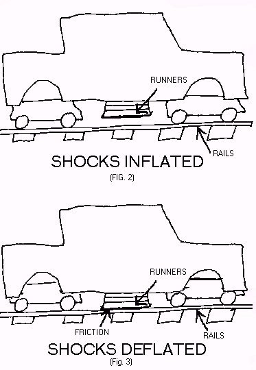

_
| \
| \
| | \
__ | |\ \ __
_____________ _/_/ | | \ \ _/_/ _____________
| ___________ _/_/ | | \ \ _/_/ ___________ |
| | _/_/_____ | | > > _/_/_____ | |
| | /________/ | | / / /________/ | |
| | | | / / | |
| | | |/ / | |
| | | | / | |
| | | / | |
| | |_/ | |
| | | |
| | c o m m u n i c a t i o n s | |
| |________________________________________________________________| |
|____________________________________________________________________|
...presents... Rocket Car
by CARINTHECLIFF
12/23/1998-#363
__///////\ -cDc- CULT OF THE DEAD COW -cDc- /\\\\\\\__
\\\\\\\/ Everything You Need Since 1986 \///////
___ _ _ ___ _ _ ___ _ _ ___ _ _ ___
|___heal_the_sick___raise_the_dead___cleanse_the_lepers___cast_out_demons___|
NOTE FROM THE AUTHOR: If you have any questions or feedback about this whole thing (or if you just want to compliment me on my fine drafting skills), I can be reached at: CARINTHECLIFF@HOTMAIL.COM
I only ask that you please be gentle. If you piss me off, I'll end up taking it out on my wife, kids or students, and I know you don't want that on your conscience.
The first thing you should know about the legend of the Rocket Car (especially if you got the story via E-mail or the Web) is that it's been around a lot longer than most people think. It started years ago, as a vague rumor passed from one guy to the next by word of mouth, usually in bars or during lunch-break bullshit sessions. The kind of story someone hears from a friend who read it in a magazine, or a half-remembered newspaper story that someone read a long time ago. It's a story that comes out of nowhere, gets passed around for awhile, then dies out, like one of those weird strains of flu that keep coming back every few years. The period of dormancy varies, but whenever the story springs back to life, it seems to spread like a grass fire. I used to think it was funny how the legend of the Rocket Car managed to spread so far (and fast) purely by word-of-mouth, but now that it's become a subject of Internet interest, its popularity has become downright spooky.
If you've never heard the legend before (in which case I can't imagine why you'd be reading this), here's the bare bones of it: Once upon a time, in some out-of-the way part of the country (take your pick of locations) a maniac took a rocket of some sort, and mounted it on the back of a car (make and model depend on automotive trends when the story is told). The maniac then sped down a deserted stretch of highway, and when he reached an appropriate spot, he lit the rocket. Unfortunately, the rocket (which was either a JATO bottle, a surplus ICBM engine, or an experimental Shuttle booster) proved to be far more powerful than the maniac anticipated. The car reached an incredible speed in a matter of seconds (somewhere between 150 miles per hour and Warp 9) at which point the car's brakes and steering became... ineffective. This development would've been bad enough on a straightaway, but through some error in planning or navigation, the maniac found himself hurtling down a road that curved sharply, not far from where he ignited the rocket. When the car arrived at the curve, it went straight ahead instead of negotiating the turn. Pilot and car then flew like an arrow (for a distance only limited by the imagination of the person telling the story), before crashing into an inconveniently-placed mountainside.
Nifty.
I'm sure this sounds pretty ridiculous if it's the first time you've heard the Legend of the Rocket Car, but that's because I didn't go out of my way to make it sound good. Most people do try to make it sound convincing, embellishing the story with all sorts of little facts and details to make it easier to swallow. I've personally heard a dozen versions of this story over the past 20 years, and I'm constantly amazed at how the story grows, shrinks, and generally mutates with each retelling. Maybe I notice these changes more than most people because I've always paid close attention to this particular rumor. Oh, I'm not a car expert or an aerospace engineer or anything, and I really don't have much interest in urban legends. Even if I did, from an intellectual point of view, this story isn't as entertaining as some of the others that have come and gone. The one about McDonalds shoveling worms into the grinders that produce Big Macs, for instance, beats it by a mile. I only pay attention to the Rocket Car legend because I'm 99% sure that I started the whole thing in the spring of 1978.
Not intentionally, of course.
Now, before you draw any conclusions, I don't want you to get the impression that I, myself, claim to be the maniac who drove the Rocket Car into the wild blue yonder. I said I was probably responsible for the rumor, not that I actually performed the test flight. As far as I know, the flight in question never happened. Like all legends, the root of the story might be true (or partially true), but once the tale started circulating, the root was lost in the embellishments. If the Legend of the Rocket Car survives, my great-grandchildren will probably end up talking about a guy from Lunartown who nailed an anti-matter pod onto an old Apollo moon-rover and flew into the side of Tycho Crater.
That's how it goes with legends.
Like I said, I'm not a rocket scientist or motorhead. I don't even KNOW any rocket scientists or motorheads. I'm a high-school biology teacher. I know, this must sound like I'm the most unqualified person in the world to give opinions about things like jet-propelled cars, but I wasn't always a biology teacher. The fact that I'm a biology teacher today is only relevant to the extent that it's responsible for my writing this story down.
Last year, a week or two before Thanksgiving, I was taking my class through some of the particulars of evolution ("how human beings were raised from monkeys" as one of my students phrased it). We were discussing Charles Darwin and The Origin of Species when one of my students asked me how Darwin's research ship ever got the name "H.M.S. Beagle".
Damned good question, when you stop and think about it.
Since I've been teaching this subject for 11 years, it's rare when a student asks a question I can't answer. But this one was a real pisser. Anyone who's ever taught in a classroom knows that sometimes you get a student that likes to play "Stump the Teacher". A kid who asks questions he doesn't really care about, just to see if he can find a gap in the teachers knowledge. Usually these questions are pretty easy to evade or ignore (or even lie about) but sometimes one will catch my interest. This was one of them. You have to admit, "The Beagle" is a pretty dumb name for a ship that cruised the Galapagos in search of exciting bird-beak variations. So I told the student that I had no idea where the ship's name came from, but I'd find out. After all, I've been teaching the same class for 11 years, so I've amassed a pretty good variety of books on the subject. Surely the answer would be in one of them.
Hah. I couldn't find the answer anywhere. My reference books concerned themselves with headier subjects, the Scopes trial and genetic mutations and whatnot, NOT the name of Darwin's boat. I looked through every book I could find, but came up dry. After exhausting all my research options, I was thinking about conceding this particular round of Stump the Teacher when one of my kids asked if I'd looked for the information on the World Wide Web.
I said "Of course I looked there. It's the first thing I checked. Go play in traffic."
Truth be told, I not only hadn't checked the Web, I didn't know how to check it. In addition to being a non-rocket scientist, I'm not (or at least I wasn't) very interested in computers or the Internet. I know this is a shameful thing for a teacher to say in 1998, but it's true. I kept meaning to take a look at the Internet-connected computers in the school library, just to see what all the hoo-hah was about, but I simply hadn't gotten around to it. Actually I was a little bit intimidated by the machines, and kept putting off the inevitable confrontation due to embarrassment. Sure, I could've walked into the library during my free period, sat down at one of the machines and tried to figure out what to do on my own, but what if I couldn't make it work? It wouldn't be long before someone spotted my baffled expression and realized I was completely lost. So the next day I went to the library during my free period and asked the librarian for help, feeling like Crocodile Dundee asking how to work the bidet. But the librarian had obviously dealt with the situation before, and gave me her ten-minute "Internet For Stupid Teachers" course without making me feel any dumber than she had to. As soon as she left me alone with Netscape running and a search engine online, I typed "Darwin" into space provided, and let the machine do its thing. When the results of my search started filling the screen, the first thing I noticed was that there were over two MILLION sites listed as being Darwin-related.
The second thing I noticed was that none of them seemed to pertain to Charles Darwin, the most famous naturalist in history. Instead, they all seemed to focus on "The Darwin Award", an "...honor (posthumously) bestowed on people who did the most good for humanity by removing themselves from the communal gene-pool".
Which really isn't a bad idea, when you think about it.
Of course I expected this "award" to be a piece of tongue- in-cheek humor, the sort of thing that used to make the rounds via smudgy Xeroxes in the days before E-mail and the World Wide Web. And that's exactly what it turned out to be. What I wasn't prepared for was my very first encounter with the story of the Rocket Car in print. Not only in print, but in a format that can reach around the world. When I read the story, I didn't know whether to laugh or cry or get nauseous, but I think if I were alone, I'd have done all three. Based on the number of different Websites cross-referenced to the word "Darwin", I'll bet that if you read the Rocket Car story from a computer monitor, the version you saw looked something like the one that follows. The text, anyway. The high-tech, precision-drafted engineering diagrams are my own addition. Don't bust my balls about them, either. I already told you that I'm not a motorhead or a rocket scientist, and I'm no Leonardo da Vinci, either.
The Arizona Highway Patrol came upon a pile of smoldering metal embedded into the side of a cliff rising above the road at the apex of a curve. The wreckage resembled the site of an airplane crash, but it was a car. The type of car was unidentifiable at the scene. The lab finally figured out what it was and what had happened.
It seems that a guy had somehow obtained a JATO unit (Jet Assisted Take Off-actually a solid fuel rocket) that is used to give heavy military transport planes an extra "push" for taking off from short airfields. He had driven his Chevy Impala out into the desert and found a long, straight stretch of road. Then he attached the JATO unit to his car, jumped in, got up some speed and fired off the JATO!
The facts as best could be determined are that the operator of the 1967 Impala hit JATO ignition at a distance of approximately 3.0 miles from the crash site. This was established by the prominent scorched and melted asphalt at that location. The JATO, if operating properly, would have reached maximum thrust within 5 seconds, causing the Chevy to reach speeds well in excess of 350 mph and continuing at full power for an additional 20-25 seconds. The driver, soon to be pilot, most likely would have experienced G-forces usually reserved for dog-fighting F-14 jocks under full afterburners, basically causing him to become insignificant for the remainder of the event. However, the automobile remained on the straight highway for about 2.5 miles (15-20)seconds before the driver applied and completely melted the brakes, blowing the tires and leaving thick rubber marks on the road surface, then becoming airborne for an additional 1.4 miles and impacting the cliff face at a height of 125 feet leaving a blackened crater 3 feet deep in the rock.
Most of the driver's remains were not recoverable; however, small fragments of bone, teeth and hair were extracted from the crater and fingernail and bone shards were removed from a piece of debris believed to be a portion of the steering wheel.
As I said earlier, for the past 20 years I've kept an eye out for stories like this, and I've heard plenty of them. But the stories I'd heard up until then had always been vague and somewhat skimpy on technical details, making them marginally easier to swallow. Or at least to repeat. But the Darwin Award version was different. It was chock full of numbers and specifics, which is always bad news for a legend. Oh, initially it might make the story more believable, but throwing in a lot of facts and figures also gives the non-believers plenty of details they can use to refute the story. In the case of the Darwin Awards version, I'm surprised that anyone, anywhere, believed the story well enough to repeat it the first time. For instance, there's the fact that this event was supposedly investigated by the Arizona Highway Patrol. Well, that's not too hard to check, is it? One call to the state police in Arizona would be all it took to get a confirmation or denial. If you don't believe me, give it a try. You'll get an irritated denial before you've even finished asking the question. Actually, the AHP is so sick of answering questions about this whole thing that they may well hang up in your ear.
Don't feel like making a long-distance call just to have someone hang up on you? Then ask yourself this: If the Darwin Award story is true, then why was it never reported in the national media? Why has nobody ever produced pictures of the crash site? And how about the unfortunate "pilot"? Nobody was ever able to attach a name to this person? Specify the location?
If you want to explain these questions away by blaming human error or police indifference or whatever, that's okay. There's too much apathy and incompetence in the world to pretend that couldn't be the case. But if you look at the physics of the story, you'll see that the whole pile of bullshit is impossible, regardless of the human angle. It's simple stuff, too. You don't have to be an aerospace engineer to see what I'm talking about. For instance, when the Chevy left the road with its rocket still going full-blast, why did it go in a straight line? Take a look at a missile sometime. You'll notice that it's... missile-shaped. Nice pointy nose, tail fins, stuff like that. It's built that way so it'll go in a straight line. The 1967 Chevrolet was a nice looking car, sure. But it doesn't look much like a missile. Mount a big rocket on a `67 Chevy and it may go straight as long as it's on the ground. But once it got airborne, the weight of the engine would immediately pull the nose down. And if the JATO was still blazing away, the car would drill itself into the ground like a tent-spike before it got fifty feet from the cliff.
This story is obviously bullshit to anyone willing to give it a little thought, but it persists, mainly because people WANT it to be true. And most of those people are men. As a story that got its start when it was still being shouted across pool tables in noisy bars, women were left out of the loop until it hit the Internet. Sort of like the story about the deadly gas that lies inside the core of a golf ball. Little boys learn this one too, but not little girls. And when the little boys grow up (to whatever extent they actually do grow up), the Golf Ball Toxin story is replaced with the Rocket Car story.
One "urban legend" debunker attributes the huge popularity of this story to the fact that it's "...a real-life version of the Road Runner cartoon. Wile E. Coyote nails an Acme Jato Rocket onto the back of a Chevy Impala and flies into a canyon wall."
Works for me.
The question is, how did such a story ever get started in the first place? Oh, don't get me wrong, I'm not trying to say that nobody would ever be dumb enough to attempt a stunt like this. Anyone who followed the O.J. Simpson trial will probably agree that there simply aren't any limits to the depths of human stupidity anymore. It's just mighty unlikely that someone stupid enough to pilot the Rocket Car would be smart enough to build it in the first place. The story probably started with an event that that bears some similarity to the final version, a much smaller event that gradually evolved into the final legend.
All I know for sure is that myself and three other guys were getting up to some awfully weird shit out in the desert back in the spring of 1978, shit that was more than weird enough to start the Legend of the Rocket Car. And only one of us was stupid enough to be the pilot in the Darwin Awards story.
At least that's what I keep telling myself.
One thing I want to make clear from the start is that I'm not pissing on the Rocket Car legend purely as an academic exercise. When my friends and I set out to build the vehicle we test-fired in the spring of 1978, a real-life jet-powered, road-traveling car was exactly what we had in mind. Craig Breedlove was busy breaking land speed records in the Spirit of America, Evel Knievel had graduated from "biker" to "payload" while attempting to jump the Snake River Canyon a few years earlier, and rocket-powered vehicles were a pretty popular notion. Unfortunately, machines like this require a lot of time and money and engineering skill to build and operate.
My friends and I had none of these things.
In 1978, I was 22 years old and still living with my parents. My father owned a scrapyard, twenty-two acres of barren desert scrub ideally suited to having junk thrown on it. The yard was a salvage smorgasbord, covered with everything from dead water heaters to junked airplane cockpits. And since we lived near a major Army storage facility, a lot of the scrap my father bought and sold came from government auctions. To be brutally honest, the main yard looked like a cross between Sanford & Sons and Apocalypse Now. My father would go to the auctions held at the post from time to time, bid on pre-marked lots of God only knew what, then send me out he next day with the big flatbed to collect the latest pile of junk he'd bought. Plenty of people who went to these auctions ended up with nothing more than tons of unusable junk that was worth less than they paid for it, but my Dad always seemed to find the lots that contained valuable stuff. He also knew plenty of people who owned military surplus stores, and usually had some idea of what was in demand and what wasn't. But since the nearby Army base was a huge storage depot, the auctions weren't the sort of affairs that the average man-off-the-street would be interested in. The lots for sale were usually measured by the ton, and if a lot seemed to have a few items you were interested in, you had to buy the whole mess. Because of this, my Dad ended up with an amazing amount of unusable military surplus, things like gas-masks and vehicle parts that were worthless in the civilian world.
But from time to time, we'd get weapons, too.
No , he never bought a pile of crap and ended up with a crate full of M-16's or a Shrike missile, the military was usually careful enough to keep THAT from happening. But from time to time we did end up with stuff we weren't supposed to have. Once day I opened a crate marked "heater assembly" and found it full of smoke grenades. My Dad found a steel ammo box full of blank M-60 rounds once. And even though these instances were a rarity, the Army had a very strict policy toward scrap dealers who found such things: You had to give them back. No two ways about it. Before even being allowed to place a bid, dealers at an auction were required to sign several forms, one of which stated that they'd return any "explosive, ordnance, fuse, detonator, or other chemically viable part or assembly of a weapons system." I remember that paragraph well, since it's the only part of the Army red tape that ever directly pertained to me. The penalties for non-compliance outlined at the end of the paragraph sounded pretty scary (five-figure fines, possible imprisonment, etc), and were enough to make my Dad return the crate of smoke grenades, but not the blank ammo. These were judged to be too trivial to warrant a drive to the base, and my Dad ended up keeping them draped over a file cabinet in his office, as a decoration.
Of course I'm telling you this because it's how I managed to get hold of the JATO bottle we used for our rocket car. Actually there were four of them, each in a long, hay-filled crate with "BARREL ASSEMBLY" stenciled on the side. One day I went out to the base to pick up a load of junk my Dad had bought at the auction, and while we were going through the stuff back at the yard, I spotted the crates and took a look. And even though I didn't know what the hell it was at first glance, I knew it wasn't a barrel for anything. The JATO bottle was a round metal cylinder about four feet long, and less than a foot in diameter. At first I thought it was a gas cylinder of some sort, but written on the side in red paint were the words "M-23 JET ASSIST UNIT". And rather than the sort of valve assembly you'd see on a gas cylinder, the end of the bottle had an inverted funnel shape to it, with a rubber plug at the lowest point. It was obviously a rocket of some sort. And judging from the weight (it took two people to even budge the things) they were still full of something.
Once I figured out what they were, I decided I had to call Jimmy.
Jimmy and I met in the third grade (or thereabouts), and were best friends for most of our growing-up. His family lived just down the street, and his father ran an auto body shop in town. On more than one occasion Jimmy's Dad and my own traded parts or services, and our families were pretty close. But while I went to work for my father after graduating high school, Jimmy went to college to study mechanical engineering. He had a natural talent for figuring out things in the physical world, but was never much good at putting them into practice. He could design and visualize, but when it came to hands-on applications, he just wasn't very talented.
Nevertheless, he was the first person I showed the JATO bottles to.
Actually, I didn't show them to anyone right away. The campus where Jimmy took classes was almost 150 miles away, so he spent his weekdays in a rented room and only came home on the weekends. I found the JATO's on a Wednesday, which meant I had three days before I could tell Jimmy about them. More than enough time for me to cook up the idea of the Rocket Car. As a matter of fact, as soon as I realized what that dull metal cylinder represented, I thought about attaching it to a car and taking a jet-propelled ride. I spent the rest of Wednesday, Thursday and Friday planning how it could be done. The principle certainly seemed simple enough. Nail the rocket onto one of the junkers in my Dad's field, point it down a straight stretch of road, and light the mother up. Sure there'd be minor details to be worked out, but the basic idea was fairly straightforward.
All I can say is thank God I consulted with Jimmy before actually doing anything. If it wasn't for his intervention, I'd have probably ended up a damp spot on a highway somewhere.
Jimmy came over to the house on Saturday morning, we drove to the yard, and I showed him the rocket. He immediately knew what it was, or at least what it seemed to be. A solid fuel rocket, the kind they'd used in Vietnam to give cargo planes a kick in the ass when they needed to take off from short runways. Very simple, very straightforward. Also very dangerous. I described the idea of the Rocket Car to him, and at first he was pretty enthusiastic. But after thinking the whole thing over for awhile, he not only lost his enthusiasm, but made me promise I wouldn't actually do anything with the JATO until he had time to check a few things out. I agreed, mainly because I knew I'd need Jimmy's help if I was ever going to make the Rocket Car work.
We talked about design possibilities for the rest of the weekend, and when Jimmy went back to campus, I stashed the JATO's in the back of a wasted milk truck rusting in the field. When Jimmy came back the following weekend, we sat down at his kitchen table and he explained precisely why the rocket car wouldn't work.
It was a sobering (and depressing) lecture.
The main problem was control. Jimmy explained that the JATO bottle would produce something like 2,500 pounds of thrust (albeit for a very short time), which sounded like more than enough to ensure a fun ride. Unfortunately, this huge amount of thrust would not only be unstoppable once it was started, it would probably have to be applied to a point on the car that wasn't designed to handle such a such a force. Under normal circumstances, a car gets its forward thrust from the back axle, by way of tires against the pavement. Which means that a normal car will never exceed a certain amount of thrust due to the fact that the tires have to touch the pavement to move the car forward. Jimmy described the whole thing using top-fuel dragsters as an example. When the driver hits the gas, the back end of the car tries to lift into the air due to the sudden force applied to the rear axle. But as soon as the ass end starts to lift, the tires lose traction, and the thrust decreases. The back end drops, thrust is restored, and the process starts all over again. So a car of a given weight using driven wheels can only get so much forward thrust. The limiting factors are the weight, the distribution of the weight, size of the tires, and torque applied to the wheels. The fact that a car uses driven wheels creates a self-damping system that ensures the wheels will stay on the ground (at least most of the time). The only reason dragsters and funny cars pop wheelies is that they use oversized tires that screw up the relationship between torque and traction. Unfortunately, a rocket car has no such restraints. A massive amount of thrust is suddenly being applied to a point on the car that wasn't designed to handle it, and there's no telling what happens next. Maybe the front end lifts off the ground. Maybe the rear. Maybe the ass end would slew around sideways. The only thing that was certain was that the car would not go in a straight line, and would continue to not go in a straight line at a very high rate of speed.
Naturally I asked how Craig Breedlove managed to drive the Spirit of America at 600+ miles an hour, but I knew the answer before I even spit the question out. He hired a team of aerospace engineers and rocket scientists to design a car that was built to have a jet engine sticking out its ass.
After hearing this, Jimmy didn't even have to outline the rest of the reasons why my idea wouldn't work, but he did anyway. There was also the fact that store-bought tires couldn't handle the sort of acceleration a rocket would provide, which was why all land-speed record cars used custom-made, solid-rubber tires. Simply spinning a regular tire at rocket-car speeds would probably create enough centrifugal force to tear it right off the rim. And if that wasn't enough, there was the problem of stopping the thing once it got rolling. And structural stress. And so on and so on.
By this time I'd pretty much decided that the whole idea was stupid and suicidal, which was why I was amazed when Jimmy proceeded to tell me exactly how the rocket car could work.
One thing that remains constant in every re-telling of the Rocket Car legend is that it reportedly took place somewhere in the southwest United States. I've heard versions stating that the whole thing happened in Arizona, Nevada, New Mexico, western Texas and southwestern California, and in each case, the location seemed to be a critical part of the plot. Which makes sense, considering the premise that the story is based on. The Rocket Car would have to be launched on a fairly long, flat stretch of road, away from prying eyes. The Mojave is an ideal place to find such a road, as anyone who's ever driven across the desert will tell you. The Darwin Award version specifies Arizona, which is covered with roads that would be ideal for the event described in the story. But one thing that strikes me as incredibly silly about this version is the fact that the test pilot chose to test his vehicle on a road with a curve in it. The story specifies that the cliff where the car impacted was at the "apex of a curve", and that the test pilot ran under JATO power for 2.4 miles before hitting the turn and becoming airborne.
This suggests a pretty obvious question: If you were going to test drive a rocket-powered car, what sort of road would you pick for the ride? Would you choose a section of highway less than three miles from a turn in the road that overlooked a canyon?
I don't think I would.
Even if Jimmy hadn't been around to talk sense into me and I had attempted to drive the rocket car, I'm sure I could've found a stretch of highway that didn't include a hairpin turn. The desert contains thousands of miles of highways and dirt roads, and it would've been much harder to find the kind of road in the Darwin story than to find a nice level straightaway. On the other hand, when Wile E. Coyote lights the big skyrocket tied to his jalopy, he always seems to be near an unexpected turn. I guess whoever wrote the Darwin story must have assumed this was standard procedure.
Fortunately, highways aren't the only long, straight thoroughfares through the desert. After Jimmy was through demolishing my plans to build the Rocket Car, he pointed out that the control problem could easily be overcome if the car was actually a rocket sled, running on rails rather than asphalt. Mounting the rocket on a railroad car would not only solve the problems of control and traction, but if an abandoned stretch of track was used, traffic wouldn't even be an issue. And the Mojave is covered with abandoned railroad track, most of it the old-fashioned narrow-gauge kind used for mining trains near the turn of the century. I knew of at least three such pieces of track within five miles of town. Finding a railroad car that would actually run on the old-fashioned track was a whole nother story, but by the time Jimmy finished explaining his idea, I already had a plan in mind to deal with that part of the equation.
The following morning I found myself bouncing across the desert in a battered four-wheel drive pickup with the remaining two members of Team Rocket Car (my tongue is firmly in cheek when I use that term), Sal and Beck. Beck and I were almost as close as Jimmy and I when we were kids, but Beck had a "wild streak" that caused most of the trouble we got into from time to time. During high school his "wild streak" got out of control, Beck turned into "one of those dope-smoking degenerates" (Mom's preferred term) and he dropped out a year shy of graduation. Sal was Beck's junior brother, junior not only by calendar-count but by any sort of I.Q. measurement. Sal wasn't retarded or anything, but people tended to use phrases like "not too swift" and "a few bricks short of a load", a lot more often than usual when he was around. Just like "dope smoking degenerate" tended to pop up in conversations that involved Beck.
Okay, so they weren't exactly Nobel Prize laureates, but I didn't have much choice in my selection of assistants. I needed their truck.
The truck actually belonged to Beck's father, who used it in the performance of his job. Whatever that was. Nobody knew for sure what Beck's Dad did for a living but the truck was ugly and battered, sat on huge mud-grabber tires, and came with a massive 454 engine. Beck's father would drive the thing out of town occasionally, sometimes staying gone for days at a time. When he returned, the truck always looked as if it had spent the entire time driving around in the desert. If Beck knew what his father did for a living, he never said. But Jimmy and I figured the man used his pickup for transporting something (ahem) back and forth from remote desert locations. Contraband vegetation arriving at an isolated airstrip was one possibility, and people desperate to become American citizens without a lot of government interference was another. The only relevant fact is that the truck was very good for cruising the desert, which is why we used it to visit an abandoned silver mine a few miles from town that morning. The mine had been out of commission and the entrance boarded over for as long as any of us could remember, but at least a few brave kids had explored the interior of the shaft. Everyone knew there was nothing of value left in the mine, with the exception of some ancient equipment that was worthless, even as scrap. Worthless to most people, anyway. That's because very few people went into the mine looking for old mining equipment.
We did. And we found some, too.
Actually, Beck himself was one of the juvenile delinquents who'd poked around in the mine years earlier, so he knew just what to expect when we pried off the old wooden planks covering the entrance. Less than a dozen feet into the shaft was a train of ancient bucket-cars, the tiny railcars used to haul ore out of the mine while it was in use. Probably parked so close to the entrance to discourage people from going any further. I wasn't too thrilled about entering a man-made tunnel that could cave in at any moment, but I could see from my flashlight beam that the "train" only consisted of three bucket-cars linked together. And despite the fact that they'd probably been parked for forty years or more, they seemed to be in reasonably good condition. Shit lasts forever in the desert, it really does. Beck dragged a towchain into the mine, looped it around the hitch on the last car, then used the pickup to drag the whole line of cars closer to the entrance. When the cars were nearly clear of the overhang, I went inside and used a five-pound pony-sledge to bash the connection on the last car until it came free. When Beck threw the pickup into gear and dragged the first two cars clear of the mine, and the metal wheels screeched so loud I thought it would bring the shaft down on my head. Of course the wheels were frozen with rust, but they were far from destroyed. The first thing we did when we got the bucket cars into the light of day was turn them upside-down, then slop grease onto the axles. After a few well-placed whacks with the sledge, we got the wheels to turn. A few more whacks, and we had them turning freely enough to push the bucket-cars up a ramp and into the back of the pickup. Once the bucket cars were loaded, we replaced the boards over the mine entrance, then took the cars back to the scrapyard.
The Rocket Car was off to a fine start.
One aspect of the Rocket Car legend that always tickles me is that no matter how much the story varies, the make, model and year of the car is always specified. Sure this is a nice detail to have on hand, but considering the details left out of the description, it looks... sorta silly. In the Darwin Award version, there's no mention of which highway the car was on, or even whereabouts in Arizona the story took place. And Arizona is a pretty big place. There's also no mention of any investigation that took place afterwards. But despite all these oversights, the story did specify that the car was a 1967 Chevy Impala. I think the reason this detail is always supplied is because it's critical to make the listener think the test pilot at least looked cool when he flew into the cliff. You'll never hear someone tell a story about a guy in a rocket-powered K-car or a Volkswagen Beetle. It has to be a car that deserves to have a rocket attached to it.
In the case of our Rocket Car, we gave some serious thought to not even using a car body. As soon as we got back to the scrapyard, Beck wanted to weld one of the JATO's to a bucket car, stick the car on a track, and light the rocket. He was doubtless the craziest member of Team Rocket Car, and if I'd been willing to go along with his idea, I have no doubt he'd have climbed in and lit the fuse himself. Fortunately, they were my JATOs, so I had veto power over all the dumb ideas. Or at least the real dumb ones. Of course sticking a JATO on a bucket car was out of the question, but building a simple platform on a bucket-car base with a car seat bolted onto it sounded like the easiest way to build a rocket sled. Actually, this is pretty much what the NASA rocket sleds looked like. But this arrangement would mean that each run would be limited to a single passenger, and I only had four JATO's. When Jimmy and I discussed the details of the project, he seemed pretty confident that the thrust from the rocket would be enough to push a four-passenger car at a reasonable speed. And if we used a car body, we'd have a windshield, doors, and some degree of protection if anything went wrong. Granted, a car body wouldn't do us much good if we hit something (like a canyon wall) at jet-fighter speed, but it was better than wiping out in a director's chair at 300 miles per hour.
Despite Beck's impatience, I got started building the Rocket Car the next day.
Our car wasn't a 1967 Chevy Impala, but a 1959 Chevy Impala. A bone-white Impala, with a red interior. I know how bizarre that sounds, but once a story starts to mutate into a legend, there's no telling which parts of the truth will stick. Obviously the Chevy Impala part made the cut.
We didn't choose the `59 Impala for its aerodynamics or structural qualities, but because one was available. My father happened to have one, resting on cinderblocks, in a forgotten corner of his lot. Engine, transmission and wheels were all missing, sold to Jimmy's father at some point. The only reason this car was otherwise intact was that Chevrolet only used the 1959 style for a single year, which meant the body parts would only be usable on another 1959 Impala. This particular car was obscure enough so that once the mechanical parts were stripped, it was pretty much useless. And this is why what was left of my Dad's `59 Impala was left to decay in a field.
Fortunately, the leftovers were all that we needed.
Cutting the bodies from the bucket cars was a chore, but not as bad as I expected. The thin metal of the buckets was rusted to tatters in spots, so burning through it was fairly easy. But despite this, I still used almost an entire tank of oxy getting the bodies cut away from the bases, and I knew my Dad would be suspicious when he found I'd used all the oxygen in an almost- full tank. Luckily, Jimmy was able to help out in that department. When I told him about my predicament the following weekend, he simply took my empty oxygen cylinder and swapped it with one of the dozen or so his Dad kept on hand at his body shop. My father might notice if a brand new tank of oxygen were suddenly empty, but Jimmy's Dad's shop used so much gas he'd never know the difference.
Attaching the cut-away rail car bases to the Chevy frame was pretty easy too. Jimmy stressed the importance of getting the two sets of wheels precisely aligned, but it wasn't that hard. The old Chevy frame had plenty of places for bolts and welds, so picking spots where the wheels would line up was a snap. And since the Impala was already up on blocks, it was no problem to slide the wheel frames underneath and lift them into place with a floor jack, then weld away. I'm sure that these days my students would laugh like hell at the thought of me laying underneath a car with an oxyacetylene torch in my hand, but the fact is, I learned how to draw a bead and cut metal when I was 14 or 15 years old. Growing up around a scrapyard did have certain advantages, and learning how to work with a torch was one of them. So aligning the wheel frames and welding them to the car was a fairly straightforward process.
The propulsion unit (hah!) consisted of a five-foot length of steel water pipe, welded to both the rear bucket car and the Chevy's frame. This might sound like overkill, but at the time I had no idea how much thrust to expect from the JATO bottle, so it seemed best to err on the side of caution. I plugged the end of the pipe facing the front of the car with a slug of scrap steel and welded it into place, and even cut the center out of a threaded cap to screw onto the exhaust end to hold the JATO bottle securely once it was installed. The end-cap seemed like a good idea while I was doing it, but Jimmy laughed like hell when he came in the following weekend and saw my handiwork. He pointed at the steel cap, and said "That rocket is gonna be pushing against the car hard enough to make it fly like a bullet, and you're afraid it'll fall out the BACK end?"
What can I say? This is one of the reasons Jimmy was doing all the brainwork.
Unfortunately, his critique wasn't only limited to the job I did on the "propulsion unit". He also asked how I planned to stop the thing once the ride was over, and I had to admit that I didn't have the slightest idea.
In the Darwin version of the Rocket Car tale, the car burned out its brakes instantly, and was eventually stopped by a cliff face. We hoped to come up with a somewhat more elegant braking system, and we did. But not without considerable brainwork.
The night Jimmy inspected my work on the Chevy, all four members of Team Rocket Car gathered at a neighborhood bar to discuss the considerable problem of stopping the car once it was moving. When I started putting the car together, I assumed Jimmy would have some idea what we'd do. But as it turned out, he was just as clueless as the rest of us. So we gathered at the bar in the hope that one of us could come up with a workable idea.
Of course the lack of any way to stop the Rocket Car was considered a very minor point with Beck. He was perfectly willing to haul the car out to a long stretch of empty track, get in, fire it up, and hope he slowed down before he ran out of track. In his eyes, worrying about something as trivial as brakes was a sign of cowardice.
Like I said, he was out of his fucking mind.
Fortunately, Beck didn't have much say about the situation, so we decided that we wouldn't launch the car until we had some sort of braking mechanism to slow it down.
The most popular idea was, naturally, a drogue chute. The Spirit of America used one, as did a few types of fighter planes, top fuel dragsters, etc. But like the optimal solutions to most of our problems, the question was where to find one. Nobody had any idea how to go about getting a parachute. Nobody except for me, that is. My father actually had six Army surplus parachutes sitting in a storage shed near the office at the scrapyard, the spoils of particularly good auction years before. Five of them were standard personnel chutes, and one was a massive cargo-drop canopy. But Dad also knew he had six of them. He'd started out with a dozen, and occasionally sold one to a skydiver or army/navy store. A good surplus parachute was worth upwards of $200. There was no telling what the cargo chute would be worth to the right buyer. But if one were to turn up missing, Dad would certainly notice. Of course we might have gotten away with using a parachute, then returning it once we were finished with it, but even this presented problems. It might work okay for the first ride, but how about the second? I certainly knew nothing about parachute rigging. All I was sure of was that there was a lot of cloth that had to be stuffed into a very small pack.
Besides, I'd already stuck my neck out pretty far for the sake of the Rocket Car, and I didn't want to stick it out any further. So I kept the existence of Dad's parachutes to myself, and hoped someone else would come up with an alternate plan.
Using a retro-rocket was discussed briefly, but it only took Jimmy a minute to punch that idea full of holes. Even though rigging a retro would mean nothing more than sticking a second JATO on the front of the car to oppose the one in the rear, it would mean a maximum of two rides before we ran out of JATO's. This much was obvious. What wasn't obvious was the physics of the whole thing, which Jimmy was happy to explain. Firing the first rocket would provide a huge forward thrust for a very short time, but a retro rocket would produce an identical thrust (if we were lucky) in the opposite direction, for the same duration. Which would mean the only way to bring the car to a dead stop would be to fire the retro as soon as the thrust rocket burned out. That would result in a 0-to-300 acceleration in seconds, followed by a 300-to-0 deceleration in the same amount of time.
Doesn't sound like much fun, does it?
And if the retro was fired a little too late, it could easily result in the whole rig traveling backwards. Possibly at a high rate of speed. Or even worse, the retro might be a dud. Or the ignition system might not work.
Needless to say, we shitcanned the retro-rocket idea in a hurry.
Sal suggested outfitting the car with a huge anchor, one that could be heaved out the window at the critical moment. The rest of us suggested that Sal shut the fuck up and get us another round of beers.
I brought up one idea I'd been toying with, stretching a cable across the track and fitting the Rocket Car with a tailhook to slow it down. Why not? After all, aircraft carriers had been using this system to stop incoming planes for years, and it seemed to work just fine. But before I could explain the idea, Beck started laughing his ass off, then asked if I wanted to use a rubber inner-tube to catch the car, or just tie a rope between two fence-posts. And I clearly remember how much this pissed me off. Here was a guy willing to strap a military rocket onto his back and sit in a rusty rail-car while someone lit the fuse, but he was laughing at my ideas. Unfortunately, he did have a point. It wasn't until years later that I found out how aircraft carriers absorbed the shock of a plane catching an arresting wire (it involves huge pistons moving through cylinders of hydraulic fluid), but I knew that rigging a similar system would be next to impossible. Putting a tailhook on the car and catching an arresting wire was simple. But it sure as hell couldn't be stationary wire. There would have to be some system to absorb the impact of a car moving at high speeds, and we couldn't come up with anything. We went through a slew of ideas for mechanical systems, but I rejected them all because they were either too complicated, too expensive, or too impractical.
Jimmy pointed out that rocket sleds usually ended up in a pool of water, which both acted as a brake and cooled the whole contraption down. Beck pointed out that all the narrow-gauge railroad tracks he'd ever seen were in the middle of the desert, where pools of water were pretty tough to come by.
Overall, we ended up batting exactly zero for the evening.
I remember that I was pretty damned depressed when Jimmy and I left the bar that night, despite the fact that I was pretty drunk. Considering the progress I'd made on the rocket car up to that point, I figured that a braking system would be a minor point. Surely if we put all three of our heads together (well, 3-1/2, counting Sal) we could come up with something.
But it hadn't happened.
Or at least it hadn't happened while we were all sitting at the bar. Jimmy tried to blow some optimistic sunshine up my ass while we walked up the street toward our houses, saying that one of us might be able to come up with something later, once we were all sober. I didn't consider it likely. Beck and Sal seemed to think better when they were drunk, and they were both pretty shitfaced when we left them. If they hadn't come up with anything at the bar, chances are they never would. And Jimmy and I weren't having any brainstorms drunk or sober.
Anyway, there's no telling how Sal and Beck spent the rest of their evening, but the next morning my Dad woke me up by pounding on my bedroom door. When I finally peeled my eyes open, he asked me who was delivering my car parts in the middle of the night.
I had no idea what he was talking about.
Part of my incomprehension was from a hangover, but even if I'd spent the previous night drinking Kool Aid, I would've been pretty confused. So he led me out to the front porch and pointed to a bundle of four thick metal rods, tied together with twine, laying on the porch swing. When I looked closer, I saw that they were actually a set of heavy-duty air-adjustable car shock absorbers. Jammed under the twine was a note written in what looked like crayon on a crumpled paper bag.
It said this:
Problum solved.
Call me later
Major Tom
I stared at the note for quite awhile, trying to figure out what it meant. At first I figured Jimmy must have left the bundle of shocks, since his father stocked such things at his body shop. But there was no way a college student like Jimmy would misspell a common word like "problem", drunk or sober. And the fact that most of the words were spelled correctly pretty much eliminated Sal. Which meant that the shock-absorber care package must have been Beck's doing, and as soon as I realized this, I hustled the bundle into the house and stashed it in my room. Obviously Beck's creative juices hadn't really started flowing until Jimmy and I left the previous night, and he'd eventually come up with some sort of solution to the braking problem. It also seemed that he had enough confidence in his idea to act on it. At the time I had no idea what sort of solution Beck could've come up with for our "problum", I just hoped it turned out to be as sensible in the light of day as it seemed when Beck came up with it the night before. The bundle of shocks I stuck under my bed were relatively new, but covered with dust and road-grime. They obviously hadn't come from an all-night auto parts store. I guessed that Beck had been struck with a burst of twisted inspiration after Jimmy and I left, then spent the rest of the night staggering around town with his brother, a bumper jack, and a crescent wrench. Looking for donor to contribute some hardware to our cause. It seemed as if they'd found one, too. And if someone was going to wake up that morning to a car that was mysteriously missing all four shock absorbers, I hoped like hell Beck's plan was worth it.
But I never actually asked Beck where the shocks came from, and he never volunteered the information. I didn't consider it critical to the mission.
I did, however, call him later in the day to ask what I was supposed to do with the shocks. His first suggestion was that I stick them up my ass. I assumed that he was just in a bad mood from a hangover, since there was no way an assfull of shock absorbers would help to slow a fast-moving Rocket Car. So I kept interrogating him until he finally remembered the details of his Grand Plan, and agreed to meet me at the scrapyard later on. When he finally showed up at the gates to the yard he looked like hammered shit, but I expected as much. Go spend a night getting drunk and stealing auto parts and see how you feel the next day. But he was also reasonably coherent, and described his idea while we walked out to the weedy corner of the field where the Rocket Car was still perched on cinderblocks.
And I have to admit, it was good. Real good. Better than anything we'd figured out up to that point, anyway. But the best part (to me, anyway) was that it didn't involve me stealing anything else that my father might notice.
Beck's idea was simple, elegant, and easy to put into practice. I'd install the air shocks on the Rocket Car normally, just as if the car would be riding on pavement instead of rails. But I'd also bolt a pair of wooden beams onto the belly of the car, runners that were placed exactly between the front and rear train wheels. Each runner would be thick enough to reach almost all the way down to the tracks, and the bottom would be covered with rubber cut from old tires. The effect would be that the car would roll freely while the air shocks were inflated, with the twin runners suspended inches above the steel tracks. When it was time to stop the car, the pilot would activate a release valve which would dump the air from all four shock absorbers simultaneously. The car would drop until its entire weight was resting on the runners, which would be pressing into the railroad tracks. This would provide two brake shoes three feet long, pushed against the track under the weight of the car's body, providing a huge amount of stopping-power. And since the wheel flanges would also still be firmly on the tracks, the car would remain traveling in a straight line.
When Beck finished explaining his idea, I stood there with my mouth hanging open. Actually we both stood there with our mouths open, but while my jaw was flopping due to surprise, Beck's was caused by a powerful hangover that was still affecting his motor control. I must admit, though, I was pretty impressed with his thinking. We'd talked about dozens of ways to stop the rocket car the previous evening, but nothing that even came close to Beck's plan. It was simple to build, easy to install, and stood a fair chance of working. I knew that sooner or later I'd have to talk to Jimmy about the whole thing, but that didn't stop me from getting to work installing the air shocks on the Chevy as soon as Beck slouched out of the scrapyard and went home.
I worked on the car for the rest of the afternoon, wanting to get as much done as I could on a Sunday, while the yard was closed. By the end of the day, I had the shocks installed on the car and a pair of three-foot-long runners made from sections of 2 x 4 bolted together to make them thick enough to reach the rails. All that was left to do was bolt the runners to the car frame and arrange the air hoses for the shock absorbers, and the car would be ready to test. It was THEN that I finally called Jimmy and asked him to come down to the yard. Talking to him sooner would've been the sensible thing to do, but I didn't want to take a chance that he'd come up with some laughably obvious reason the brake-runner system wouldn't work. At the time, my thinking on the subject was pretty clear: There were only two ways were going to be able to stop the Rocket Car, either by using a drogue chute or by Beck's braking system. And although I wasn't too keen on the idea of taking one of my Dad's parachutes, I'd do it if it was the only way to get the Rocket Car to work. But even if we did use a drogue chute, the car would need an additional braking system anyway. A parachute will slow a car, but it won't stop it. You still need regular brakes for that.
The way I figured it, we'd need Beck's idea no matter what happened. So I decided to show Jimmy the braking system I was building and see what he thought. If he pointed out some reason why it was completely foolish, I'd show him Dad's parachute collection, then tell him that the brake runners were the standby system, and we were actually going to use a parachute to slow the car to reasonable speed.
It not only sounded reasonable, but it kept me from looking like a total asshole.
All my planning was unnecessary, though. When Jimmy heard me describe the rail-braking system and saw what I'd done to the car so far, he was very impressed. I think he was also a little pissed off that Beck had come up with the idea, and not him. But here's a thought that never occurred to me back in 1978, and to be honest, I'm glad it didn't: We never really had any proof that it was Beck who came up with the idea. For all we know, it was Sal who dreamed up the notion of using runners to stop the car. Yes, yes, I know, it's a ridiculous thought. Like having your pet hamster wake up one morning with a revolutionary process for splitting atoms. After all, we're talking about the guy who wanted the pilot of the Rocket Car to hoist a goddamned anchor out the window to slow down.
Still, you never know. And Jimmy, if you're reading this, I'm sorry I even brought it up now. I know you'll lose some sleep over it. But I couldn't resist.
Anyway, Jimmy did give the braking system his stamp of approval, and I never had to admit that Dad had a bunch of parachutes stashed in the shed. The only reservation Jimmy had about the system was one that should've been obvious to me from the start: heat. If the car were traveling as fast as we expected it to, rubber-coated planks pressing against metal rails would probably get hotter than hell. On the other hand, this was basically the same system used by every car on the road, as well as racing cars. Drum and disc brakes are essentially nothing more than pads or shoes pressing against moving pieces of steel to stop the car. The only difference between their system and ours was that standard brakes pressed brake pads against steel that was spinning, while ours used steel moving in a straight line. And even though our car would be traveling a lot faster than most, we had much more overall braking surface. So Jimmy and I talked about ways to cool the runners for awhile, just in case heat buildup turned out to be a real problem. Actually, I think Jimmy might have made the heat problem sound worse than it really was, just so Beck wouldn't get ALL the credit for solving the brake problem. But to give credit where it's due, we did wind up with a heat problem, so whatever Jimmy's motivations might have been, it's a good thing I listened to him.
Then again, if I'd ignored him, I doubt it would've changed the final outcome too much.
With the conceptual details taken care of, all that was left was construction. Even though the braking and brake-cooling systems were the hardest part of the car to fabricate, it didn't take long to get them built and installed. Bolting the runners to the car frame was quick work, and even though it took a little doing to get the air-dump valve connected to all four shock absorbers, I had plenty of materials to work with laying around the scrap yard. After removing the valve stems from the air inlets to the shocks, I attached sections of air-compressor hose to the valves themselves. The other ends of the hoses ran to an air valve that started life as the door-opening lever on a city bus. With the lever in the "open" position, all four shocks could be inflated from a single air inlet near the dump lever. Once the shocks were pressurized, releasing the lever kept them inflated until the lever was pushed again.
I first tested the air-valve system on Tuesday afternoon, and when I saw that it worked the way it was supposed to, I immediately called Beck. He came to the yard with Sal, and the three of us took turns raising and lowering the car for almost an hour before the novelty wore off. Despite the fact that it wasn't very exciting to watch, there was something distinctly satisfying about seeing the system work the way it was supposed to. Of course Beck was more anxious to "take the car for a spin" than ever, and he actually got a little pissed off when I pointed out that we weren't out of the woods yet. There was still a heat problem to deal with, but this detail didn't cut much ice with Beck. He was positive that it wouldn't be a problem, which meant that our next step was to take the Chevy out and light the rocket. So rather than dwell on the heat problem, I said "Haul it out WHERE, and light the rocket with WHAT?"
That took the wind out of his sails in a hurry.
See, we still hadn't considered how we were going to ignite the JATO, but to be honest, this wasn't a major sticking point. There was a rubber plug in the end of the exhaust nozzle of the rocket I'd inspected, and it seemed logical to assume that some sort of igniter plugged into the hole. Probably an electrical fuse, something along the lines of the igniters used for model rockets. Whatever fueled the rocket (ammonium perchlorate, I later found out) was no doubt highly flammable, and shouldn't be too tough to ignite.
But I knew I could come up with something better than a fuse.
A much bigger problem was the launch site. Beck got sulky and petulant when I pointed out that we had no idea where we'd actually run the car, but he didn't argue too much. Even if I agreed to hoist the car onto Dad's flatbed right then and there and drive around searching for a spot to use, I'm sure Beck would've realized how dumb the idea was before we even got out of the yard. So I put Beck in charge of finding a suitable launch site, which I'd have done even if he wasn't being a royal pain in the ass and keeping me from my work. His Dad's four-wheel drive was the perfect vehicle for location-scouting, and he and Sal were more familiar with the surrounding desert than anyone I knew. Beck and Sal headed for the gates deep in conversation, and I got back to work.
The brake-cooling system I ended up building was pretty cheesy, I'll be the first to admit that. But since we weren't even sure it was necessary, I didn't want to spend a lot of time messing with it. I ran a length of garden hose along each wooden runner, near the point where the runner was attached to the car. Took the ends near the front of each runner, and led them into the empty engine compartment. I tied off the ends under the car, then punched holes along the sections near the runners with an awl. Water entering the ends in the engine compartment would leak out through the perforations, soaking the runners and pads.
I told you it was pretty cheesy.
The only part of the cooling arrangement that even came close to sophistication was the result of a brainstorm that came to me while I was strapping a five-gallon jerry can under the hood of the Rocket Car. I started putting the sprinkler system together with the idea that we'd simply open a valve before launch, letting water leak out of the hoses and onto the runners for the duration of the run. But while I was attaching the jerry can, a better method occurred to me. Instead of attaching the garden hoses to a valve, I drilled a pair of holes directly into the top of the jerry can, and fed the hoses through the holes. Then I drilled a third, smaller hole, and connected another hose from the jerry can to the air-dump handle for the shock absorbers. I sealed all the hose connections with massive amounts of rubber cement, then called it quits for the day.
No word from Beck or Sal that night, so I assumed finding a launch site wasn't as easy as they'd thought it would be.
When I checked the Rocket Car the next day, the rubber cement sealant had dried to the consistency of a hockey puck, so I tested the entire system. I filled the air shocks from Dad's portable compressor, then closed the dump valve. Filled the jerry can with water, and screwed the top down tight. Said a quick prayer, and hit the dump-valve lever. There was a slight hiss as the air rushed out of the shocks, through the dump valve. But instead of being vented into the open, the last air-hose I'd installed directed the escaping air into the jerry can full of water under the hood, forcing water out through the sprinkler hoses. When I checked under the car there was an impressive puddle, and water was still jetting out of the holes in the garden hoses.
I was thrilled beyond words.
And when Jimmy saw the whole system in action a few days later, he said he was "..really impressed with my application of Bernoulli's Principle." Hell, I didn't even know that the Italians built rocket cars.
Before I go on, I think I should take a minute to explain why this whole story is getting so lengthy. Actually, my wife says I should issue a formal apology for inflicting such a long-winded pile of shit on anyone who reads this. And I halfway agree with her. But I want to make you aware of one thing: I did not plan it this way. When I decided to write down the story of the Rocket Car, I figured it would take all of two pages, maybe three. Four at the outside. That's because I was working from a set of 20-year-old recollections, and a lot of the details were missing. I didn't realize that once I started dredging up these old memories, all sorts of bits and pieces would start to fill themselves in, whether I wanted them to or not. Four pages became five, then six, etc. etc. I originally planned to have the whole thing done by the beginning of April, so that it would be ready to go on the 20th anniversary of the first (and last) run of our Rocket Car, but April came and went, and I was still hunting and pecking. So did May, then June.
Nothing I can do about it now.
Besides the miscellaneous details that came flooding back when I started to write this story down, the technical details of the whole project turned out to be more involved than I remembered when I started writing. When I began, I remembered a simple 1-2-3 process that took place over the course of a few weeks, and seemed fairly simple. But as the story progressed, I realized I had to supply a lot more detail than I originally intended, just to keep it from sounding completely stupid. And I'm still not sure I've accomplished the not-sounding-stupid part. Even though the project was executed one step at a time, it had a goofy, ill-planned, Li'l Rascals feel to it, and no amount of explaining is going to change that. Because basically it WAS a Li'l Rascals undertaking. The only thing missing was a sign saying "He-Man Rocket Kar Klub" over a treehouse door. But I'm not going to lie about the facts or try to make the whole thing sound less silly than it actually was. If someone had been hurt or killed, or even we'd been caught trying to run a homemade rocket car through the desert, I'm sure we'd all have ended up in the pokey. Even if a judge were willing to overlook the instances of theft and trespassing and illegal possession of military fireworks, we'd have probably been charged with something, just on general principal. Conspiracy To Commit Flagrant Stupidity, maybe. If Beck had gotten his way, a charge of attempted suicide would've been a sure thing.
But nothing like this ever happened.
Having said that, I'd now like to issue a formal apology for inflicting such a long-winded pile of shit on you.
Sorry about that. It won't happen again.
There you go, Lily. I did it. Happy?
The idea of the Rocket Car sitting on cinderblocks in the scrapyard, just waiting for a place to run it, was driving Beck crazy. I have to admit, I was getting anxious to take it for a test run myself, but Beck was really going nuts. I didn't hear anything from him for the rest of the week, and I assumed it was because he hadn't found a suitable launch site. It was actually because his Dad had taken the four-wheel drive out for one of his mysterious desert jaunts, and was gone for the rest of the week. That left Beck and Sal with only one option, driving Sal's beat-to-shit Ford Falcon, a car that barely held its own on pavement, never mind in the desert.
Meanwhile, the Rocket Car waited in the field.
I tried to think about it as little as possible, since I didn't want to end up afflicted with the mania had gotten hold of Beck. I worked at the scrapyard, just as I always had, trying to avoid the far corner of the lot where the Rocket Car was. More than once I thought about what I'd do if my Dad suddenly got a buyer for that 1959 Chevy Impala, but there was really no point worrying about such things. If it happened, I was simply screwed. No way to explain my way out of a situation like that.
So I simply waited.
Actually, I did get one minor detail taken care of during the delay, building igniters for the JATOs. I removed all the taillights and turn-signal lights from the Impala (no matter what became of the Rocket Car, signaling for a turn wouldn't be an issue) and soldered two wires to each bulb. Next I carefully cracked the glass on each bulb, leaving the filaments intact. The bare filaments would heat to white-hot when connected to car battery, but simply laying a hot filament inside the JATO nozzle didn't seem like it would do the trick. Maybe it would have, but since Beck and Sal still hadn't found a place to use for a launch site, I had time to come up with something better. So I pulled a dozen of the blank M-60 rounds from the ammo belt my father kept in his office as a decoration, tore off the skinny end of each shell, and dumped out the powder inside. I poured a little of the powder into each of seven squares of newspaper, folded the newspaper squares into packets around the filaments of the light bulbs, and trussed each one up with masking tape. When I connected one of them to a battery to test the idea, it made an impressive little flare.
Surely enough to light the JATO. I hoped.
When Sal and Beck still hadn't reported finding a launch site by Friday morning, I even went through the trouble of putting an old car battery on the charger at the shop, installing it in the Rocket Car, and wiring it to a switch on the dashboard. I considered painting the switch bright red, with the word IGNITION! underneath, just because I had the time. In retrospect I'm glad I didn't go through the trouble, since we never used the switch anyway. But at that point I realized that if Beck and Sal didn't find a good spot soon, I might end up hauling the car out to the nearest set of tracks and trying it out myself.
Jimmy came back from college again that weekend, just about the same time Beck's father came back from who-knows-where with the four-wheel-drive. During the week I had high hopes that we'd be able to launch over the weekend, but when everyone gathered at the scrapyard on Saturday afternoon, I knew it wasn't going to happen. Jimmy took a look at the sprinkler system and pronounced it workable, although I could tell he still had some grave misgivings about how well a couple of pissing garden hoses would cool down the brake runners. I had the same misgivings myself, but the amount of heat generated would depend on so many unknown factors that is wasn't something we could really plan for. We didn't have any idea how fast the car would actually go, what shape the tracks would be in, or even how much the car weighed. From my point of view, the sprinklers were there for only one reason: To keep the runners from burning up like matchsticks when they hit the rails. After all, they were made from wood. If the sprinklers could keep the runners from turning into torches, they'd fulfill my expectations.
While Jimmy was inspecting the rocket car and telling us what he'd found out about my JATO bottles (which turned out to be very little), Sal and Beck told us about the launch locations they'd scouted out over the week. And the news they had was grim indeed. Within ten miles of town there were a total of three sections of track long enough to run the rocket car on, and in my opinion they were all dead losers. Beck and Sal knew the area well enough to realize that most of the modern wide-gauge tracks had been laid either directly on top of, or very close to, the places where narrow-gauge tracks had once existed. So naturally they started their search at the switching yard near the city limits. There they found an excellent set of narrow-gauge tracks roughly paralleling a shiny set of wide-gauge rails that were probably used every day. But despite the fact that the old-style tracks stretched for miles, they ran right through a busy switching yard. Not a good place to test a jet-propelled boxcar.
Another possibility was a set of rails that started in the desert, continued for five miles or more, and ended in a soft dirt field that would have been ideal for cushioning any crash that might happen. Unfortunately, this set ran directly through the middle of town, and the field at the end was the Jaycees Softball Field, right across the street from the police station. Even though Beck must've realized we'd never go for that idea, it was obvious that he liked it. I imagine he wanted to set the Rocket Car on the tracks across from the police station in the dead of night, then blow the horn and scream until a dozen cops came running out of the station to see what the ruckus was. At that point he'd hang a moon out the window, then light off the JATO and blaze out of town.
Or maybe this wasn't what he had in mind. But if you knew Beck, you'd probably agree with me.
The last location Sal and Beck found was even worse than the tracks that ran past the police station. The Mystery Mine was a bargain-basement tourist attraction a few miles from town that promised to show visitors the INNER WORKINGS OF AN AUTHENTIC SILVER MINE. People who paid the $2.50 admission were loaded aboard an ancient, rattling, mine-car and hauled through a few hundred feet of cavern, while a tour guide in a hardhat and goggles pointed at rusted pieces of machinery and chunks of rock, explaining what they were. We'd all been on the Mystery Mine tour at one time or another, and everyone agreed that the only thing even vaguely interesting about it was wondering if a cave-in would trap you in the bowels of the mine. Possibly forcing you to eat the other tourists to survive. There was an old song that used to play on the radio that described this scenario, and there was a popular joke around town about being trapped in the Mystery Mine and having to eat your way out. A discreet sign near the mine's entrance proclaimed that it was inspected for safety by the U.S. Bureau of Mines on a yearly basis, but everyone knew that ancient mines tended to cave in weather the U.S. Bureau of Mines said it was okay to or not. Therefore, new folks in town were always advised not to take the Mystery Mine tour without packing a sharp knife and a salt shaker.
Cannibalism and the U.S. Bureau of Mines really weren't our problem. But the fact that the Mystery Mine was a tourist attraction presented all SORTS of difficulties. The land around the Mystery Mine did have plenty of narrow-gauge track, that much was true. More than enough to suit our needs. But it also had lots of fences, lots of lights, a couple of security guards, and a handful of vicious Dobermans that patrolled the grounds at night. We all knew it, too. I think Beck and Sal really just went out to the Mystery Mine to take the tour and kill an afternoon. Jimmy and I wouldn't have even wasted time with the trip.
The end result was that the Rocket Car was ready to roll, but we had no place to roll it. Beck and Sal were confident that they'd be able to find a good spot the following week (since they were once again desert-capable) but Jimmy and I had serious doubts. We knew the area around town as well as anyone, and the chances of finding a good place to run the car were starting to look grim.
When Jimmy spent the weekend in town, he usually headed back to the college on Sunday evening, right after dinner. So it surprised me when I got a call from him at 6:00 Sunday evening, asking me if I wanted to take a ride with him to "discuss a few things". I said sure, no trouble. He told me to drive over to his house, and when I got there, he was already in his car. He signaled for me to follow him, and I did. I had no idea where we were going, but I followed anyway. After a few minutes I saw that we were heading out of town, and I wondered what he was up to. But I stopped wondering a little while later, when he pulled to the side of the road near the abandoned mine shaft where we'd liberated the two ancient bucket cars. He got out of his car, opened the trunk and took out a tire iron, then headed toward the mine entrance without a word. When I asked what we were doing, he held up one finger in a wait-a-minute gesture.
I shut up.
Jimmy walked down the slope and stopped in front of the boards we'd re-nailed over the entrance. Even though the sun was almost down, there was still plenty of light to see by. I thought he'd brought the tire iron to pry off the boards near the entrance, but when I reached the place he was standing, he started walking down the tracks, away from the entrance. Ten paces later he'd reached the point where the tracks ended, buried in sand. He took a few more paces, then bent over and jabbed the pointy end of the tire iron into the sand.
To my surprise, it clanked.
Jimmy looked at me with a goofy little smile on his face, and when I realized what he was doing, I smiled myself. Probably just as goofily. He pulled the tire iron out of the sand, walked a few more paces, then stuck it into the ground again. No clank this time. But when he stuck it in again, a few inches to the left, he got the same metallic clank. He was now standing a good fifty feet from the mine entrance, and at least twenty feet from the spot where we all assumed the tracks terminated. He looked up at me, with that dumb smirk still plastered across his face, and said "So, how far out do you think these tracks actually go?"
Why none of us thought to take a look at the tracks coming out of that abandoned silver mine before this is anyone's guess. Beck and Sal and I had stood right on top of them when we got the bucket cars, but none of us considered the possibility that a long section of the track might still be there, only underground. As a matter of fact "underground" is a pretty drastic term for what we found. The tracks were actually covered by a fairly thin layer of drifted sand and dust. The outcrop around the mine shaft broke the wind enough to keep the tracks clear near the entrance, but beyond that, the rails must have been a good place for drifting sand to pile up, and eventually cover the rails. But Jimmy's tire iron sank no more than an inch or two before striking metal, and we didn't so much have to dig for the rails as brush the sand off them. We ended up walking more than a half mile from the mine entrance, Jimmy stopping occasionally to stick the tire iron into the sand, and striking metal every time. Eventually it started getting too dark to see where we were going, so we made our way back up the slope to where the cars were parked. I told Jimmy I'd be back bright and early the next day to find out exactly how far the tracks ran, but Jimmy seemed confident we'd have more than enough.
He didn't seem too confident of the Rocket Car, though.
When we got back to the cars, I found that Jimmy had me follow him in my own car because he was going back to school directly from the mine entrance. But there was still a matter he wanted to discuss, that matter being the first run of the Rocket Car. Without a good launch site the matter could wait, but since it seemed as if we'd found one, Jimmy figured we'd better discuss the whole thing immediately. It turned out that he was very worried about the first run of the car, particularly the idea of having a person inside when we fired it. Of course I already knew there were plenty of things that could go wrong, since I'd built the thing in a junkyard. But when Jimmy started to lay out the possible ways a person inside the car could get hurt or killed, he made it sound a little less safe than going over Niagara Falls in a barrel. First, we were dealing with a highly volatile chemical propellant we knew nothing about. We didn't know how old it was, where it came from, or how it was supposed to behave. There was actually a very real possibility that the JATO could explode like a bomb, reducing the car to flame and shrapnel in a split-second. But even if it did work as expected, the rocket was held in place by a length of water pipe welded to the bottom half of a train car that was God only knew how old. If any of the welds didn't hold, there was no telling what the outcome would be. Then there was the matter of the brakes. All we had was a setup that looked good and sounded like it might work. But if someone inside the car found themselves going 100+ miles per and the brakes DIDN'T work...
The way he described the whole thing made it sound like suicidal insanity, and I started to get a little pissed off at him. If he'd been thinking about all this shit the whole time, why hadn't he SAID anything?
As it turned out, he wasn't suggesting that we scrap the project outright, just that we perform a "test run" before trying it for real. An unmanned test run. Rig a system to activate the brakes at some point after the JATO had burned out, point the Rocket Car down the tracks, and let it run pilotless the first time. After all, it wasn't as if we needed a man at the tiller while the car was moving. The person we'd been referring to as the "pilot" would actually be the "passenger", his sole duty being to hit the dump valve before the car ran out of track. And since we had four JATOS, wasting one for the sake of safety seemed like a prudent move.
I had to admit, he made a LOT of sense.
I pointed out that Beck would probably have a bird when he found out we weren't going to let him drive the car on its maiden voyage, but we both agreed that it wouldn't be a major problem as long as Beck got to drive it on the first manned run. We'd just take a second JATO along, and if the car ran successfully the first time, Beck could take it out the second time. If the car ended up a twisted lump of smoking metal, Beck would be happy we decided to take the precaution.
With these details settled, I said goodbye to Jimmy and headed home. On the way I was thinking about how to kick in the braking system with nobody inside the car, but since we'd only need it for the trial run, it didn't have to be anything fancy. The next day I was busy at the yard sorting through the latest load of junk my Dad had bought at an auction over the weekend, but I DID find time to rig the brakes for our test run. All I did was twist a screw-eye into each brake runner, then run a length of piano wire through the openings in each eye and up through a hole in the Chevy's floor. I tied the ends of the wire to a short stick, and used it to prop the brake's dump valve in the "up" position. Then I looped a piece of rubber from a bicycle inner tube over the lever, and tied it under the valve box. The bike tube pulled the lever toward the "dump" position, but the lever couldn't move due to the stick propping it up. I figured that once we found a good section of track, all we'd have to do was drive a spike into one of the rail-ties at the point where we wanted the brakes to kick in. When the car passed over the spike, the spike would snag the wire, pull out the stick, and the dump valve would snap down, activating the brakes.
Now, if you're getting tired of hearing about all the Rube Goldberg bullshit I was adding to this machine, take a minute to think about how I felt while I was doing the work. By the time Jimmy suggested that "we" rig "some sort of automatic brake system", I was getting mighty sick of rigging and drilling and bolting and cutting. Let's face it, despite the fact that we came up with a few clever ways to solve pretty tough problems, the Rocket Car was still just a pile of shit that I knocked together in a junkyard. And I was tired of trying to figure out ways to make important things happen by using other people's garbage. I made up my mind that the auto-brake was the last piece of work I was going to do on the car. If what I'd built at that point wasn't good enough, I'd simply turn the whole mess over to Beck and let him drive the fucking thing into the Mystery Mine, or past the police station, or whatever he wanted to do.
However, there was still the matter of the launch site preparation to take care of, so on Tuesday I called Beck and told him to swing by the yard in his Dad's pickup and get me after work. He and Sal both showed up, and when I took them to the abandon mine and showed them how far from the entrance the tracks extended, they were ecstatic. I didn't bother to explain that Jimmy had come up with the idea two days earlier, since they'd probably spent Monday and Tuesday driving around in the desert looking for a decent set of tracks themselves. I brought a tire iron along, and sat on the tailgate of the pickup while Beck drove away from the mine entrance. Every now and then he stopped the truck, and I plunged the tire iron into the sand where the tracks should be. And I kept striking metal over and over. Finally the truck stopped and stayed stopped, and when I looked over my shoulder, I saw that we'd come to the end of the line. Or at least the end of the usable line. Exactly 1.9 miles from the mine entrance, the narrow-gauge tracks intersected a set of modern, standard-gauge tracks leading into town. Which made sense, after I'd thought about it awhile. The newer tracks were probably laid on the bed of some old narrow-gauge tracks, and the rails leading toward the abandoned mine were probably a spur coming off the main tracks.
But who cared? We had two miles of narrow gauge track, more than enough to run the Rocket Car on.
I hoped.
Beck was thrilled over the discovery, until I explained that the buried rails would have to be cleared before we could take the car out for a test run. He enthusiastically assured me that he and Sal would have the tracks cleared the next day, but I had my doubts. And my doubts turned out to be well-grounded. I didn't hear anything from Beck and Sal the next day, or the day after that. I assumed they were in the process of clearing the tracks, and it turned out they were. And the process turned out to be a lot harder than either of them imagined. They started out with Beck driving the truck while Sal sat on the tailgate, dragging a street-sweepers broom along the rails. It worked, but not as well as they expected. After driving that two-mile stretch of track twice, Beck came up with a much better idea. They simply broke back into the abandoned mine, grabbed the last bucket-car we'd found near the entrance, and pushed it down the length of the tracks with the bumper of the pickup. Once the wheels loosened up, the bucket car worked like a snowplow and cleared the tracks with a single pass. I had my doubts that this method worked as well as they claimed, but when I drove out to the abandoned mine after work on Thursday, I saw that it had. Two rusty metal rails poked out of the hardpan, starting at the mine entrance and extending out into the distance. When I took a closer look at the rails, I saw that they were indeed rusty as hell, but still solid. When I banged one with a rock, I saw plenty of good steel under the rust.
Best of all, they were straight as an arrow.
For me, this was the point where the whole project made the transition from theory to reality. I squatted next to those tracks and realized that the last obstacle had suddenly been removed, that we really were going to run the car. And to my surprise, it didn't feel good at all. Suddenly the whole thing seemed stupid and insane and dangerous and illegal as hell. But by then it was way too late to stop.
If the track had been ready on Monday, I don't think I could've convinced Beck to let the maiden voyage of the rocket car wait until Jimmy came in on the weekend. He was far too anxious to get moving on the whole thing. As a matter of fact, the only way I was able to get him to wait as long as I did was by agreeing to start getting things ready on Friday. After my Dad and I went home from the yard on Friday, I returned to the yard and found Sal and Beck waiting for me. We backed the flatbed into the weedy field where the Rocket Car was docked, set up the ramps, and hoisted the car onto the flatbed with the winch. I drove the flatbed out to the abandoned mine and down the slope to tracks, scared shitless that I'd get the truck stuck in the soft sand. But I made it down the slope okay, and we lowered the Rocket Car onto the tracks.
It looked perfectly at home sitting on the rails. Like that's were it was meant to be all the time.
But we didn't have time to stand around admiring the way the Rocket Car looked on the tracks. Even though we were a hundred yards from a fairly secluded stretch of highway, the sight of a five-ton flatbed, a four-wheel-drive pickup, and a rocket powered `59 Chevy on railroad wheels would've looked pretty peculiar to anyone coming down the road. So as soon as the car was on the rails, I climbed into the Chevy's drivers' seat and Beck pushed me down the tracks with the pickup's bumper until the car was close to the mine entrance. Actually, it almost went through the boarded- up hole in the mountain. I was sitting there enjoying the ride, halfway to the mine entrance, when I suddenly realized that hitting the dump valve would stop the car permanently. Or at least until we went back to the scrapyard and snagged the portable compressor to re-inflate the shocks. About a quarter mile from the mine entrance I started waving out the window and screaming for Beck to stop, and when he finally hit the brakes, I must've been doing about forty or so. By the time the car coasted to a stop, I was no more than fifty feet from the entrance.
Close call.
We pulled the boards from the mine entrance again, and Beck used the pickup to ease the Chevy into the mine. Very slowly. Once it was all the way inside, he took me back to the flatbed, and followed me back to the yard. I parked the flatbed where it usually spent the night, we loaded the portable compressor into the pickup, and returned to the mine.
Since we didn't have a tow chain, we had to muscle the car far enough out of the mine for Beck to get the truck in front of the Chevy and push it back down the tracks. When we got the car about a mile from the entrance, we let the car coast to a stop, Beck got out of the pickup, and Sal slipped into the driver's seat. Beck jumped into the Rocket Car with a maniac grin on his face, and Sal maneuvered the pickup behind the Chevy. Beck gave us a jaunty thumbs-up, and Sal hit the gas. We picked up speed until we were doing about fifty, and just before I was about to scream at Sal to stop, he hit the brakes. We watched the rocket car pull away at goodly clip.
And keep going.
And keep going.
And just as I was wondering if the brake system might have malfunctioned, I saw the ass end of the Chevy pitch up slightly as Beck hit the dump lever. Sal and I both let out the breath we'd been holding, and drove down to where the car was stopped. When we got there, the car was resting on the runners and Beck was sitting on the hood. Less than twenty feet from the mine entrance.
I'll say it again: Beck was a fucking maniac.
I thought he might make up an excuse for waiting so long to stop, that the brakes didn't work or whatever, but he didn't even bother. The runners had scraped the rust off ten feet of the rails, and when I looked under the Rocket Car, water was still squirting out of the hoses. When I asked what the fuck was wrong with him, Beck said "Hey, I didn't feel like pushing this fucker all the way to the garage, so I let it coast most of the way. You have a problem with that?"
Actually, I didn't. The "garage" he was referring to was actually the mine shaft, where we planned to stash the car until the firing test the next day. Nobody wanted to go through the bullshit of hauling the car back to the yard, so we decided to simply push it into the mine, replace the boards, and leave it there overnight. And after re-inflating the shocks from the compressor in the pickup, that's exactly what we did. But every time I looked at those two bright spots on the rails, less than twenty feet from the boards covering that mine shaft, I wondered if it would ever be a good idea to let Beck drive the thing while a rocket was pushing it.
The first (and last) test run of the Rocket Car happened on Holy Saturday, 1978. For the non-Christians in the house, Holy Saturday is the day before Easter, a day the faithful are supposed to spend preparing for the Easter feast and quietly contemplating the Miracle of the Resurrection. My family has been Catholic for about a thousand generations, so I suppose this put me firmly among the ranks of "The Faithful". Which means the Pope probably would've frowned on my spending the day before Easter experimenting with illegal military ordnance and trespassing on private property, but I'm also confident that nothing in the Bible covers what we were doing that Saturday morning, so I probably had some wiggle-room.
We assembled at the abandoned mine early in the morning, just before dawn. The prefabricated story to my parents was that Jimmy and I were driving up to.... a big city in the area (you'll excuse me if I don't specify which one), and wanted to get an early start. Jimmy was using the same excuse for anyone at his house who was curious. Dad wasn't even going into the yard on Holy Saturday, so I had the day to myself. I went to Jimmy's house and found him waiting for me on the front porch, and we left for the mine.
When we arrived, I was tremendously relieved to find that Sal and Beck were already there, sitting on the hood of the pickup, which was parked near the mine entrance. They even had the boards pulled from the mine entrance and the car pushed out into the open. My relief wasn't due to the fact that they'd showed up (you couldn't have kept Beck away with a court order) but because they were just sitting on the hood of the pickup, patiently waiting for Jimmy and I to arrive. See, the night before, we'd loaded two of the JATO's, the portable compressor, and three five-gallon jerry cans of water into the back of Beck's pickup, for convenience's sake. It was way too much stuff to haul in my car, and we figured the gear would be safe spending the night in Beck's truck, covered with a tarp. What hadn't occurred to me until I got home was that Beck was in possession of everything he needed to test the car himself, on the sly. I even considered taking a ride past his house around midnight to see if the truck was still there, when it occurred to me that even though he did have the ignition button on the dashboard, he had no way to light the rocket. And I didn't think he was stupid enough to set the car up and strap himself in while Sal stuffed lit matches into the JATO, trying to get it started.
Sal would've done it without hesitation. But not Beck.
I'd like to say that depriving Beck of the igniters was a piece of intelligent foresight on my part, but it was really exactly the opposite. I'd just forgotten them. We had to stop at the scrapyard to get the igniters and a hundred-foot roll of field-phone wire before we went to the mine.
Anyway, I left my car parked on the shoulder of the road, and we walked down the slope to find that Beck and Sal were aching to get the test under way. Beck shot a look at the igniters in my hand as he was getting into the truck, but it was still too dark out to read his expression. If I had to guess, I'd say it was an irritated one. Beck started the truck and drove around to the front of the Rocket Car, then left it in low gear as he pushed it to the opposite end of the track, with the rest of us riding on the tailgate. It wasn't until the car was stopped at the end of the track that Jimmy looked the car over and asked what turned out to be a VERY important question.
He said "So why is the car pointing THIS way?"
Sal and Beck and I stared at the car for a minute, and although I can't speak for the other two, I was trying to come up with something to say. To be honest, I'd never given it much thought. I suppose that when the car was brought to my Dad's scrapyard, it was hauled onto the flatbed rear-first, because the front end was further from the path winding through the yard. When we loaded the car to bring it to the mine, winching it onto the flatbed rear-first was simply the easiest thing to do, so that's what we did. And when we got to the tracks, I'd simply driven the flatbed to the end opposite the mine shaft and parked facing away from the entrance. It seemed like a good way to avoid driving the flatbed over the tracks themselves, which might have damaged them. So when we rolled the car down the planks and onto the tracks, it ended up facing the mine entrance. Sure, we could've set it on the tracks facing the opposite way, but... nobody thought of it. Actually, nobody even thought to think about it. The whole process seemed simple and straightforward, even the part where we pushed the Chevy into the mine entrance and boarded it up. I mean, you drive a car into a garage, you don't back it in, right?
So the three of us gave Jimmy a shrug, and I asked him what difference it made. He walked around the car looking thoughtful, and after awhile said "None. This is good" But later on I figured out what he'd been thinking about. If something went wrong with car (specifically the brakes), which way would we want it to be pointing? If the brakes failed while it was heading away from the mine, the car would eventually run onto the wide-gauge rails at the end of our track. And with the flatbed back in the yard, it wasn't likely we'd be able to get the car off the tracks if it got stuck there. But with the car pointed toward the mine, a brake failure would mean the car simply flew into an abandoned silver mine. We could declare the experiment a failure, nail the boards back up, and call it a day. Of course the equation looked a lot different with a passenger on board, but that's why we were doing a test run first.
Ah yes, the test run.
Once Jimmy was through looking the car over, I broke the news to Beck that the first run would be unmanned. He didn't like the sound of that a bit, even after I explained to him that it was in his best interest. Personally, I wouldn't have gone near the thing unless we'd had at least one trial, but Beck's mind didn't work that way. He wanted to ride in the car on the first run, and it took awhile to convince him that it simply wasn't going to happen. But after a little arguing he grudgingly accepted our logic. We took one of the JATOS out of its crate and loaded into the pipe at the rear of the car, then I had Sal drive me down the tracks toward the mine. When the odometer had ticked off exactly a mile, I made him stop while I got out and pounded an eight-inch spike into one of the wooden ties. The lumber was still solid enough to hold the spike well, which was nice to see, since I had no alternative plan to activate the brakes. We drove back to the Rocket Car and found that Jimmy and Beck had already shoved one of my igniters into the JATO nozzle, attached the leads to the roll of field-phone cable with wirenuts, and were unrolling the cable away from the tracks. I told Sal to park about fifty feet away from the Chevy, with the broad side of the truck facing the tracks. Jimmy had mentioned the chance of the JATO exploding like a bomb when it was ignited, and I wanted to have the pickup truck between me and the JATO when it was lit.
I filled the can under the Chevy's hood with water from one of the jerry cans, closed the hood and rigged the automatic brake. The wire stretched between the runners was only five or six inches above the railroad ties, and it looked low enough to catch on the spike with no problem. Beck came over to watch the whole procedure, a little miffed that the unmanned test had obviously been planned out well in advance. But by then it was too late for him to raise any serious objections. If the car ran okay, he'd get his ride. If not, he'd be grateful we made the test.
Once the brakes were rigged and the water can filled, there was only one thing left to do: Light the mother and see what happened.
We all gathered around the truck, Beck popped the hood, and I cut the field phone wire from the roll and stripped the ends. By then the sun had climbed over the top of the mountains, and we had a clear view of the entire track. I wrapped one of the field phone wires around the corroded negative post of the truck's battery, and just as I was about to touch the other wire to the positive, Sal yelled "Wait!"
He scared the shit out of me.
I said "What? What? What's the problem?"
Sal looked slightly embarrassed, and said "Shouldn't we have a countdown?"
Jesus Christ.
Beck gave him a smack in the back of the head, but I told him sure, if he wanted a countdown, we'd have a countdown. So Sal counted down from ten, and when he reached zero, I touched the wire to the lead of the battery.
Liftoff.
The sequence of events that followed happened so damned fast that I'm surprised my mind was able to record everything that occurred. But even though parts of this story have grown foggy over the years, the memory of the actual Flight of the Rocket Car remains crystal-clear.
When I touched the wire to battery post, we heard a little fizz from the JATO. I knew what it was, since I'd heard it before. The igniter going off. I didn't expect to hear it, since I figured the rocket would light instantly. Instead, it hissed for a second, then stopped. But before I could start to worry if the rocket was a dud, there was a massive eruption of orange flame from the ass of the Chevy, as if it had just laid the worst fart in history. Along with the flame was a huge, howling roar, something nobody had counted on. We'd all seen the Apollo launches on TV, and we knew that rockets were noisy, but nothing had prepared us for this. It sounded like.... I don't know what. Like a solid-fuel rocket igniting, I suppose. And the noise and smoke continued for what seemed like a long time before the Rocket Car took off.
No , scratch that. It didn't take off, it JUMPED.
I've been trying to figure out a way to put it into words, but the sight is almost impossible to describe. Think of this: You know what it looks like when you shoot a paper clip with a rubber band? One second the clip is between your fingers, and the next it's just... gone. You can't track it with your eyes, because it moves too fast. All you can do is hope to shift your eyes to where it was going, so you can see where it hits.
Think of the same thing happening with a 1500-pound car.
And I remember thinking later that there was no way in hell I was ever going to ride in the thing. I could only imagine what would've happened to Beck if we'd let him ride in it. I'm sure the seat would've been torn from its mounts, and Beck probably would've made a hasty exit through the back windshield. I don't know much about G-forces or rocket construction, but I can't think of any way a regular car seat could've stood up to that kind of acceleration.
In the space of a second, the car jumped down the track, heading away from us, and we were enveloped in thick, chemical-smelling smoke. Another bit of poor planning. We all ran up the slope to get out of the artificial fogbank, but the roar from the rocket stopped as quickly as it started. Jimmy says the burn time on our JATO was 2.2 seconds, but at the time it seemed a lot longer than that. I staggered up the slope and looked down the tracks, to see that the Rocket Car was moving along at a rapid pace, toward the spike I'd driven in the railroad tie. And although it was moving damned fast, it was far enough away so that I can't even take a guess as to how fast it was going. My eyes were still burning from the rocket smoke, but I did see it pass the point where I'd planted the spike, and then...
Something happened.
Intellectually, I know exactly what happened. The spike caught the piano wire, pulled the stick out from under the dump-valve lever, and the air shocks lowered the car to the rails. I didn't actually see the car drop, but it must have happened. Because a second later, more smoke started pouring out of the car. Only this time it was coming from under the car, and it was steam, not smoke. The runners had heated up, and the water shooting onto the hot brakes was turning into steam.
But it kept going.
And going.
It didn't seem to be slowing down very much, either. It must have been, since the runners were obviously pushing against the rails hard enough to create a lot of heat. But I guess it wasn't enough. The car kept moving, closer and closer to the mine. The last coherent thought I had was that it had been a very good move to point the car toward the mine. It was still moving at a good clip, highway-speed at least, when it was fifty yards from the entrance. It obviously wasn't going to stop in time, and I remember wondering just how far into the mine it would go before stopping.
But it never made to the entrance.
Later on, Jimmy and I had a long discussion about what happened next, but we were too far away for anyone to have a clear view. Maybe one of the runners burned away and got caught in the ground. Or on the tracks. Maybe one of the old axles finally reached its breaking point. Or one of my welds couldn't take the strain. Whatever it was, the Rocket Car derailed about twenty yards from the mine entrance. It still had plenty of inertia, and continued moving toward the mine, but the wheels were no longer on the tracks. Actually it was straddling one of the rails, screeching and screaming and kicking up a cloud of sparks from the point where the frame slid along the rail.
And it was no longer aligned with the mine entrance, either.
Things were still moving too fast for my brain to process the information, but when I saw the car skidding toward the mine entrance at sixty or seventy miles an hour, and not firmly on the rails, I knew that Something Bad Was About To Happen. Exactly what was still a mystery at that point, but a second later I found out. The Chevy slid down the tracks, but instead of driving through the mine entrance, it went in at an angle with the ass end canted toward the road. The front end smashed into one of the huge timbers that outlined the mine entrance, cracking it in half. After a very short pause, the timber collapsed, immediately followed by the overhead timber it supported. Those timbers must have been under considerable stress, because a second later the entire entrance to the mine collapsed on top of the Rocket Car with a huge grinding rumble and a cloud of dust.
I just gawked.
I remember that part clearly, standing there looking at the car in the distance, just before dust obscured the picture. My Rocket Car was sitting there like a busted Tonka truck while a mountain fell on it.
I almost cried.
A second later I became aware of voices shouting behind me. I turned around and saw Jimmy and Sal in the bed of the pickup, and Beck behind the wheel. They'd obviously had the sense to get into the truck and chase down the rocket car, while I stood there with my mouth hanging open. I jumped into the bed, and Beck floored it toward the mine entrance. Toward the former mine entrance. During the short ride I was wondering how we were going to haul the car out of the pile of rubble and get it out of there, but when we got closer I saw that it was a foolish idea. The front half of the car was crushed like a beer can, under boulders ranging from the size of a watermelon to the size of the car itself. Smaller pieces were still coming down when we got there. The only way that car was ever coming out was if someone torched off the back end and hauled it out with a winch.
The front end was never going to see the light of day again.
Beck stopped the truck a safe distance from the wreckage, and we all got out to look. But there wasn't much to look at. The only thing not buried by the cave-in was the last four feet of the car, and that was about it. The trunk lid and rear bumper were visible, but the rest of the car was buried under boulders and rubble. It was obvious that the car would have to stay were it was, but after we gaped at it awhile, I decided that there was one part of the Rocket Car that absolutely couldn't stay where it was.
The rocket itself.
Up to that point we were guilty of little more than trespassing. Sure we'd caused a mine to cave in, but the mine had been closed for decades, and it wasn't likely anyone would be too upset about it. But that fucking JATO bottle was sticking out of the wreckage in a very obvious way, and had to go. So I cautiously made my way over to the remains of the Chevy, hoping an expended JATO would be a lot lighter than the full one.
I gave it a tug, but it wouldn't budge.
Beck came over and gave me a hand, but we still couldn't make it move. It wouldn't even wiggle. All we could figure was that the pipe must have been twisted or squashed further in, where we couldn't see it. After a little more grunting and pushing, Beck went back to the pickup for his jack. We figured that if we took some of the weight off the pipe, we might be able to budge the rocket. But before he could get back, the pile of rubble shifted, sending a good-sized boulder careening past me.
Suddenly jacking the car up seemed like a very poor idea.
And shortly after that, even staying in the area didn't seem very smart. Jimmy quickly summed the situation up for us. At that particular moment, there wasn't much we could do in the way of damage control. The car was stuck, and there was nothing we could do about it. The JATO was wedged in too tightly to remove too. And if we couldn't move it, then it was unlikely anyone else could. Not without a major effort. Fortunately, the only thing to show that we'd even been there was the piece of field-phone wire at the other end of the tracks, and the remains of the Rocket Car itself. Which meant that it was an excellent time to get the hell out of there, before someone came down the road and wondered what was going on.
We needed no more encouragement. Beck and Sal ran for the cab of the pickup, Jimmy and I piled into the bed, Beck pointed the truck toward the road, and stomped the gas. I guess he didn't have the four-wheel drive engaged, because the back wheels of the truck threw up rooster-tails of sand as we took off up the slope, but not the front wheels. But we didn't get stuck, which was the one thing I was afraid of. We shot up the slope, bounced onto the asphalt, and as soon as the rear wheels hit the asphalt they started burning rubber. Beck steered back toward town, only stopping long enough for Jimmy and I to bail out and run to my car. I jumped in and started, it, but Jimmy ran back down the slope, toward the end of the railroad track. I yelled after him, but instead of yelling back, he stooped and grabbed something from the ground.
The field-phone wire.
He was reeling it up in his hands as he ran back up the slope, and when he reached the car he tossed the wad of wire in the back seat and jumped in.
I punched the gas, spun the car around, and headed back toward town. And that was the last I ever saw of the Rocket Car.
So there you go. That's the whole story of the Rocket Car, or at least the part that I was involved with. I never went back to the mine, and as far as I know, neither did Jimmy. We discussed what we'd do about the wreckage while driving back to town, but nothing we came up with seemed to make a lot of sense. The road running past the mine wasn't very well-travelled, but we knew that the only reason we hadn't been spotted was because the whole thing happened so early in the morning. If we went back to the site later that day, there was a fair chance we'd be spotted. Of course we'd taken that chance before, especially during the brake test the day before. But then we had the option of rolling the car into the mine shaft and getting out of there if anyone seemed curious. And at the very worst, we'd get nailed for putting train wheels on a Chevy, then sticking it on an abandoned track. I'm pretty sure there no law against that.
But now there was a very obvious piece of forbidden military hardware in plain view, and no easy way to get it out of there. The thing that kept repeating over and over in my head as I drove back to town was that paragraph in my Dad's auction paperwork. The one dealing with possession of controlled military hardware. Specifically, the part detailing prison sentences and outrageous fines. It was then that I started to think that the best way to handle the whole thing would be to not handle it at all. Pretend it never happened, and hope nobody connected the car wreck to us.
And that's exactly what we did.
Actually, timing and nature lent a hand. The following day was Easter Sunday, and there was no way Jimmy or I were going to avoid spending it with our families. And even if we wanted to, it wasn't a good day to be screwing around out in the desert. Late Saturday night a windstorm kicked up, strong enough to make the local TV stations interrupt programming with traveler's advisories in our area. Nothing very odd about that, not in our area in the springtime. Actually it was a pretty common occurrence. But this time I was thrilled to hear the reports. High winds and blowing sand could only serve to obscure the signs of what we'd been doing in the desert that morning, and the fewer signs, the better. When I got up on Easter morning, I saw patches of sand that had blown around on the street in front of the house, and was encouraged by the sight. If sand was blowing across the streets in the middle of town, it must've really been kicking ass in the desert. Later that morning I saw Jimmy at church, and even though we weren't alone long enough to talk about anything, we exchanged several Significant Looks.
And the next day, Jimmy went back to college.
I went back to work at the scrapyard, and I have no idea what Beck and Sal did. I just spent the next few days trying to act as normal as possible, expecting a police car to show up at the yard any minute. But curiosity finally got the best of me, and I called Beck on Wednesday. We met that night at the same bar where we'd discussed brakes for the Rocket Car, and Beck told me he had been out to the mine, actually a couple of times. Once he even brought a camera and took a few pictures, because what he saw was so damned funny.
Funny?
I couldn't figure out what he could think was funny about the whole thing, since I was there when it happened. But he explained it to me, and afterwards I had to agree, it WAS kind of funny. The storm that blew through the area on Saturday night had indeed eliminated most of the signs of what we'd been doing near the mine over the past few days. The tire tracks made by his Dad's pickup were completely eliminated, and the railroad tracks themselves were almost re-buried. But the Rocket Car was still exactly the same as it was when we left, ass end hanging out of a pile of rubble with a rocket sticking out of it. I'd hoped Beck was going to tell me that drifting sand had covered the remains of the car, but it hadn't.
I was waiting for the funny part, but it didn't seem to be coming.
Finally Beck reminded me of what the scene looked like to a person driving toward the crash site. I had to visualize it, since I'd never actually seen it. You drive down the stretch of road, toward a butte that used to have a mine entrance in the side of it. But now there is no mine shaft, just the rear end of a car sticking out of the side of the butte.
And, of course, the twin skidmarks on the highway where Beck's truck leaped onto the roadway. Skidmarks pointing directly at the Rocket Car. Just like you'd see in a Roadrunner cartoon.
There you go.
Now, I have to admit one thing, I didn't start hearing any Rocket Car rumors right away. Nobody did. I didn't see any articles in the paper, the cops never came to visit anyone (not that I'm aware of, anyway) and I never went back to see what happened with the Rocket Car.
Explanations?
Your guess is as good as mine.
The town I've been talking about isn't a huge one, but it's not small enough so that everyone knows each other's business, either. The road wasn't a busy one, and although the Rocket Car was visible to someone driving past, they could easily miss it. All I can say for sure is that whoever discovered the car sticking out of the butte didn't make a big fuss about it. And I'm pretty sure someone did discover it. I saw Beck once more after our meeting in the bar, at a Memorial Day party a few weeks later. He was pretty drunk at the party, wanted to talk about the whole thing, and I had a bitch of a time getting him to a private spot so I could listen to what he had to say. He said he'd gone out to the crash site a few days earlier, and the Rocket Car was gone.
I said "What do you mean, gone?"
But "gone" is just what he meant. He drove past the spot, couldn't see the car from the highway, and went down the slope to take a look. When he got there, he couldn't find any trace of the car ever having been stuck in the mine entrance. All I could think at the time is that the rubble-pile must have eventually shifted to the point where it covered the car completely. Beck seemed doubtful when I suggested it, but like I said, he was pretty drunk at the time. He said it looked more like the car was pulled out of the hole and taken away, but that's a bunch of bullshit. It has to be. To start with, none of us were there long enough for the scene to form a lasting impression. We looked at the wreckage for maybe fifteen minutes before we were back in Beck's truck and hauling ass out of there. Maybe Beck saw enough so that he could tell if the car had been moved, but I wouldn't be able to tell.
On the other hand...
Later on I started thinking about what would have happened if the county sheriff had driven by and seen the Chevy sticking out of a rockslide. Or even if someone had called the sheriff and reported it. See, the abandoned mine was far enough from town so that it probably wasn't inside the city limits, which means that it wouldn't be the business of the city cops. And folks who don't live in town learn real quickly who they're supposed to call when there's trouble. So if the site was spotted by someone who didn't live in town, chances are they'd have called the sheriff. Of course it might have been the business of the State Police, but I don't know anyone who'd call the State Police in a situation like this. Most people wouldn't even know how to call the State Police. Oh, I'm sure a trooper would've stopped to check it out if he'd spotted it while driving past, but the troopers mainly stick to the Interstates, occasionally pulling into one of the towns along the way for donuts or coffee. No, if some law-enforcement outfit stopped to investigate the crash site, it almost certainly would've been the county sheriff.
So what would he have done?
I honestly don't know. I've got no idea if they have set procedures for dealing with stuff like this (yeah, Section 203.1 of the Civil Code, Disposal of Jet-Propelled Railroad Equipment), but the sheriff's office wouldn't have called the city cops unless they had to. My Dad always hinted that there was some animosity between the two departments, the city cops considering the sheriff's department a bunch of hick-assed Deputy Dawgs, and the sheriff's department thinking the city cops were a gang of self-important pricks. And neither group liked the State Police, who, by all accounts, ARE self-important pricks. If someone from the sheriff's department came along the wreckage of the Rocket Car, I doubt like hell they'd have told any other law-enforcement agencies unless they had to. And until they found out if there was a body inside the car, there really wouldn't be any reason to share the info. So their next logical step would be to find out if there was anyone inside the car.
How?
Dig through the rubble? That's about the only way it could be accomplished. But it sure as hell isn't a job for the county sheriff and a couple of deputies with shovels. It would take heavy equipment and people who knew what they were doing. On the other hand, why go through the trouble? When you see a car that appears to be plugged directly into a mountainside, you don't even assume that there are any survivors. I try to think of what the sheriff would've done if he'd come across the crash site, and it occurs to me that the first thing he'd have seen was what appeared to be a rocket nozzle sticking out of the back end of a car. If I were the sheriff, I'd have immediately called the Army base where Dad and I got the JATOS in the first place. Who else would be qualified to deal with such a thing? NASA? Evel Knievel?
And if the Sheriff did call the Army, and they had some EOD people come out and take a look, anything could've happened next. The military bomb-squad might have taken one look at the expended rocket, told someone at the base to send out a truck with a winch, and they may have yanked the car right out of the rubble and taken it away. After they determined that there was no corpse in the car, it wouldn't be the sheriff's business anymore. Or anyone else's.
Case closed.
But I never did any serious investigation of these possibilities, for two reasons. One, I didn't want to do any snooping that might look suspicious. Two, I didn't hang around town very long after that. Two weeks after the test of the Rocket Car, I drove to.... the big-ish city I mentioned earlier, and took the ASVAB test. That's the test they give you before you join the military. And a few weeks after talking to Beck for the last time, I shipped out for Navy basic training.
Before you make any assumptions about my joining the Navy to escape the repercussions of the Rocket Car incident, let me tell you that I absolutely did not. Get that thought right out of your head. I'd been thinking about it for a long time, and if the Rocket Car had anything to do with my joining the Navy, it was just to give me a gentle nudge in a direction I was already heading. Hey, take a look at the situation I was in. I was 22 years old, living with my folks,and working for my Dad in a junkyard at the edge of a shitty little town in the desert. Not exactly A Future With Promise. I guess college was a possibility, but Dad didn't really make enough to pay my way, and I didn't feel like re-paying student loans until I was 100 years old.
Why the Navy? Well, because of that song by the Village People, of course.
No, no, just a little joke there. Don't EVEN take that seriously. Actually, there was never any question about which branch of the service I wanted to join. I joined the Navy because I wanted to get as far away from the desert as I possibly could. Some people grow up around sand and scrub and get to like it, they can't imagine living anywhere else. Some (like me) take a look around and realize they've always hated it, and didn't want to hang around for another minute. For awhile I thought I'd be considered an oddball when the rest of the sailors found out where I came from, but I found out it wasn't as uncommon as I assumed. Take a look at a list of the home towns of all Navy members, and you'll see that quite a few of the boys come from Nevada, Arizona, New Mexico and southern Texas. Joining the Navy to get away from the desert turns out to be a pretty common practice.
Anyway, I went home on leave whenever I got a chance, and saw Jimmy whenever I went back. On my second visit, I found out that Beck and Sal had hauled stakes and split for California a few months after I'd left for boot camp. Not on foot, either. They'd stolen their Dad's monster pickup, but rumor had it their Dad never even swore out a complaint about the theft of his truck. Maybe he figured it was a small price to pay to get rid of his sons for good. Or maybe the truck wasn't empty when they jumped in and headed west. Their Dad was still up to unknown hanky-panky out in the desert somewhere, hanky-panky that quite possibly involved the distribution of illegal vegetation from Mexico. Beck and Sal may have been waited for an occasion where Dad brought some work home with him, and headed for California with a few bales of Columbian contraband in the bed. I wouldn't put it past them. And if that is what happened, I doubt Dad would've been too anxious for the cops to collect his boys. Or his cargo.
Whatever the case, nobody ever found out. The next update I got on that situation was the following Christmas. My Dad told me that Beck had been busted in California for God-only-knew what, and had died in prison. The facts were sketchy, but I didn't press details. Dad obviously considered it a case of "good riddance" but didn't actually say the words, because he knew Beck was a friend of mine.
Sal was MIA, and as far as I know, nobody ever heard from him again. But without Beck to take care of him, it's doubtful that he came to a good end.
So that leaves Jimmy. He finished college, got his degree, and started working for a big company, designing various kinds of equipment. I don't want to specify the company, or even the exact type of equipment. Let's just say that you'd recognize the company name if I mentioned it, and Jimmy is head of the department that builds machines for making cold things hot and hot things cold. If that's not good enough for you, too bad.
My Dad kept the scrapyard, continued going to auctions and making a profit, all the way up until he retired last year. He and Mom moved to Phoenix, where they're probably the only retired couple who don't complain about the heat. They came up to visit a few months ago, to see Lily and me and the kids, and while they were here I took my Dad out one night to shoot some pool. I told him the story of the Rocket Car, not knowing what his reaction would be. I was more than a little pleased to see that he laughed so hard that I thought I'd end up having to call the paramedics. Seems that over the years he had heard various bullshit-artists mention a car driven into a cliff, but nobody ever provided any specifics, so he's always dismissed it as just another stupid story. The one important thing he had to say on the subject did not please me, not even a little. When I told him about how I built the car, I mentioned that I didn't want to take one of the parachutes from the shed, because I knew he'd find out one was missing.
He said "You mean there were still some parachutes left in that shed? Shit I'd thought I'd sold them all."
Son of a bitch.
Jimmy and I drifted apart while I was in the Navy, but we got back in touch once I got my discharge and started college. I know 26 is a pretty ripe old age to be a freshman, but I'd taken a bunch of courses and equivalency tests during my hitch in the Navy, so it only took two years to finish off my degree. One thing about living on a ship, you have plenty of time to study. I've stayed in touch with Jimmy over the years, he's met my family and I've met his, but beyond the occasional phone call and Christmas card, we haven't been very close. Part of it is that we live pretty far apart, and part of it the pressures of family, careers, etc. But Jimmy never forgot about the Rocket Car, and over the years he's taken great joy in tweaking my balls about it from time to time. Every now and then I'd get something in the mail to remind me of the whole thing, something Jimmy thought I'd think was funny. At first it was just the odd newspaper clipping or magazine article, but once VCR's became popular, he started sending videotapes. And even though there was never a note or explanation with a tape he sent, I always knew what to look for when I watched the movie. One was "The Right Stuff", and I laughed out loud when scenes of the rocket-sled tests came on the screen. Another was more recent, a Charlie Sheen flick called "Terminal Velocity". I kept my eyes peeled for whatever it was Jimmy wanted me to see, and sure enough, there was a scene where Charlie and some blonde bimbo escape from the bad guys in a homemade rocket sled.
I got a chuckle out of that one, too.
The one movie he sent that I didn't find very amusing came a few years ago, at a point where I hadn't heard anything from Jimmy in a long time. A box came in the mail, and when I opened it up, it was a videotape, just like the others. But instead of being a stand-alone movie, this was the third part of a three-movie series. And although I'd seen the first one a couple of times (it was old enough to be shown on network TV by then), I'd never seen the second part. So I had to rent Part II at the video store down the street, which I watched with my family one Friday night. The next day my wife took the kids to visit her parents, and I stayed home and put Jimmy's movie in the VCR. And I must admit, I DID enjoy it, but the similarities between the movie and our little adventure in 1978 were too close for comfort at some points. The part at the beginning of the movie, where Doc Brown and Marty McFly find the DeLorean in the abandoned mine shaft was bad enough. But toward the end, when they mounted railroad wheels on the time-machine and pushed it down the tracks with the locomotive...
Like I said, too close for comfort. And I'm really glad I watched that movie alone. I don't know what sort of expression was on my face while I watched, but it must've been a scary one. As a matter of fact, when the movie was over, I got up close to the TV and read each and every name in the credits. I didn't think I'd actually find a name I'd recognize, but we never did find out what happened to Sal after he was left on his own in California.
I guess we never will. Not for sure, anyway.
Anyway, that's my story, take it or leave it. And even if everyone who sees it thinks it's bullshit, I'm glad I told it. If I never decided to sit down and tell it, my wife probably never would've given me this nifty computer last Christmas. As a result, I not only got to write most of it from the comfort of my own bedroom, but I've also re-established contact with Jimmy. E-mail is a terrific way to stay in touch with people, and as soon as I told Jimmy I was going to write this whole thing down, he started spouting out facts and details I'd long since forgotten. That's one of the reasons this story is running so long. So I suppose that if an apology has to be made, it should be a joint apology from Jimmy as well as me.
One last thing before I call it quits:
When I originally ran this story up the flagpole for Jimmy, he looked around on the Web for the "Darwin Awards" I'd told him about, and was as shocked as I was at how far and wide the Rocket Car story had spread. But he also seemed a little miffed about the whole thing. He seemed to think that if anyone deserved the Darwin Award, it was us.
It's tough to tell just how serious a person is when you're carrying on a conversation via E-mail.
I pointed out that not only was the Darwin Award completely intellectual in nature (I doubt like hell a gold-plated trophy exists anywhere), but it was not the sort of thing a person goes out of his way to win.
Jimmy thought differently.
Have you ever seen those silver Jesus-fish emblems that Christians decorate their bumpers with? Well, not too long ago, someone came up with a variation on the emblem, sort of a counterpart to the Christian fish. It's the same outline of the fish that the Christians use, but instead of saying "Jesus" (or whatever) inside the body of the fish, it says "Darwin". And the fish itself has little feet on the underside. The message (for those academic enough to grasp it) is supposed to be a rebuttal of sorts. Evolution over creation.
Very cerebral, eh?
Well, I've seen these things around from time to time, both the Christian version and the Darwin version. And to be honest, neither one made much of an impression. But this past Easter, I got yet another package from Jimmy, the first one in a long time. I thought it was another video, but when I opened it up, I found it wasn't. Inside was a Hallmark card congratulating me on a happy 20th anniversary. Along with the card was one of the fish emblems, the "Darwin" version instead of the standard Christian model. But not exactly the Darwin version. Instead of little feet at the bottom of the fish, this one had little wheels. And there were curly lines coming from the rear of the fish. Lines that looked like jet exhaust, coming from a tail that looked surprisingly like a JATO exhaust nozzle.
Maybe Jimmy had a novelty store make it up, or maybe he made it himself. Myself, I like to think the latter. But I ran right out to my car (a boring old Toyota Camry, gasoline-powered), wiped down the trunk lid, and stuck it on. And even though nobody else knows what the hell it is, I get a chuckle every time I look at it.
It ain't a gold statue, but it's good enough for me.
.-. _ _ .-.
/ \ .-. ((___)) .-. / \
/.ooM \ / \ .-. [ x x ] .-. / \ /.ooM \
-/-------\-------/-----\-----/---\--\ /--/---\-----/-----\-------/-------\-
/lucky 13\ / \ / `-(' ')-' \ / \ /lucky 13\
\ / `-' (U) `-' \ /
`-' the original e-zine `-' _
Oooo eastside westside / ) __
/)(\ ( \ WORLDWIDE / ( / \
\__/ ) / Copyright (c) 1998 cDc communications and the author. \ ) \)(/
(_/ CULT OF THE DEAD COW is a registered trademark of oooO
cDc communications, PO Box 53011, Lubbock, TX, 79453, USA. _
oooO All rights reserved. Edited by Omega. __ ( \
/ ) /)(\ / \ ) \
\ ( \__/ Save yourself! Go outside! Do something! \)(/ ( /
\_) xXx BOW to the COW xXx Oooo